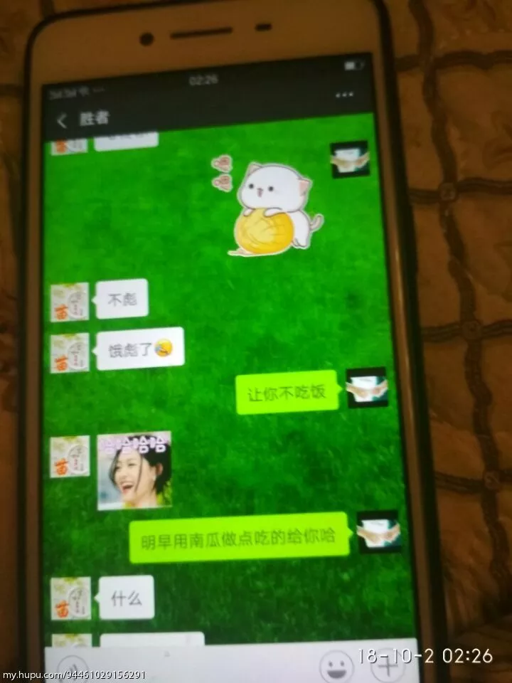
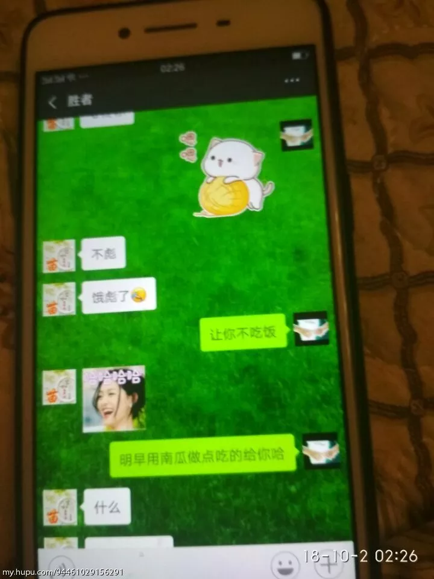

123
结婚十年被绿的彻底
原帖地址 写的真是太好了，怕帖子被删掉，故记录在此。
第一部分
我从来没想到这样的事情会落到我头上，我15年来到步行街的，每天看绿光一条街各种被绿的故事，帮忙出主意的同时暗自庆幸自己有个好媳妇，有个可爱的女儿，有个不很富裕但很幸福的家庭，当时我的是这样以为的。 发现她不对劲的时候是今年中秋回她家，路上她拿着手机不停在笑，我凑近，她迅速将正在聊的微信变成照相机，装作拍照。 过完中秋我回到40公里外的单位上班，我住单位，每周回家一次，这是前提。 国庆节放假我回家，晚上我在客厅上网，她在厨房做饭，蒸包子，炸鱼，一边做一边玩手机，微信的铃声一直响个不停，中间她还接了个电话，出去了，然后回来拿了个袋子，里面是两件给我买的衣服。让我试试合不合适，圆领衫还可以，外套我没看好。她说那明天上午一起逛街再给我买。我说好。 她睡之前有个习惯就是将手机放在床边的凳子上充电，为了方便在她睡觉之后拿手机，我特地先上床占了靠凳子的位置，假装睡着。然后她上床玩了会手机，睡之前却也没有将手机放在凳子上充电，也没有放在她那边的床头柜上，而是压到了枕头下。 我一直想等她睡着，没想到一直等到我先睡着，最后一直折磨了我两年多的神经衰弱让我在凌晨两点多钟醒来。我起床绕到她那边拿出枕头下的手机，打开微信，我看到了里面长长的聊天记录，顿时全身冰凉，心脏揪成一团，手不停的在抖。
 

我彻夜未眠，感觉天都塌了。心脏像被一把刀捅了进去，拔出来，那血就从洞里流出来，无声无息，无休无止。
早上起来，她在厨房做南瓜饼，我在镜子前给女儿梳头 吃过早饭（不是南瓜饼，那时还没烤好），她穿上外套说要把女儿送到我妈家里，我心念一闪，立刻从沙发上站起来说，我去送吧。 下了楼，我搂着她问她，宝贝，爸爸问你个问题，从中秋我们去你姥姥家之后，你有没有在你奶奶家里睡过觉？ 女儿摇了摇头说，没有。 “那从你放暑假之后，你有没有在你奶奶家里睡过觉？” 女儿点了点头，有。有过一次。妈妈说她要加班到很晚，就让我在奶奶家里睡了。 周围的人来来往往，依旧像往常那样匆匆忙忙，我站在路上，忽然感觉清晨的阳光是如此的刺眼，刺得我觉得整个世界都漆如墨染。 走到小区门口，我问她，XX，你喜欢爸爸还是喜欢妈妈？ 女儿说，我都喜欢。 我说，那如果爸爸妈妈离婚了，你要跟谁？ 女儿忽然停住脚步，看了我一眼，不说话。然后慢慢的在我怀里的那个小小的胸膛开始抽动起来。 我顿时心如刀绞，紧紧抱住她，安慰她，哎哎，别哭别哭，爸爸跟你开玩笑呢!逗你玩呢! 把女儿哄好送到我父母家，然后回到家里，我发现南瓜饼已经装在袋子里了。走到卧室我看见她正在换衣服，刚洗的头发蓬松而柔软，小巧白皙有些许皱纹却遮盖不了美丽的脸上画着淡淡的妆，喷了香水，昨天新买的衣服穿在身上竟然让我有种怦然心动的感觉，她好几年都没有这么用心打扮了。平常急着上班都是素面朝天，就算出去聚会，走亲戚也不过就洗洗头发，换件衣服。 “你今天怎么穿这么漂亮？” “有吗？”她淡淡的说。 “有，你今天真的很漂亮啊，干吗这么特意打扮啊。” “没有特意打扮啊，我以前也这样啊。你都没注意罢了。“她语气有些冷淡。”走吧。“ “去哪儿啊？” “去给你买衣服啊！” “下午再去吧。” “干吗下午去，说好了上午去的，你这人怎么老是这么拖拖拉拉的？” 我跟在她后面走到客厅，在沙发上坐了下来。 她站在玄关回头看看我，瞪着眼睛问，“你怎么又坐下了？！” “买衣服不急，我们说会话吧。 “说什么？” 我沉默片刻，抬起头问她，“XXX，我们结婚这么多年，你是不是一直对我挺失望的。“ “是，”她几乎不假思索地回答到，“结婚这么多年，我一直感觉都挺累的，你每次回家不是上网，就是玩手机，家里的活都是我干。你也很少来关心我” “你说错了，结婚的头几年我是那样的，可是这些年我改变了很多，家里的活你要求我干的我一样也没少干，你说我不关心你，可但凡你提出的要求大大小小我都满足你，就这个房子你说要买，我起初那么反对，可是你说为了换个好的生活环境，最后我也同意买了，你说我对你差吗？” “你对我不是很差，但是你觉得你对我很好吗？”、 我压了口气，问她，“XXX，我问你，结婚这么多年，我有没有做过对不起你的事？” “没有。”她抬了抬头。 我深吸一口气，看住她的眼睛，问，“那你有没有做过对不起我的事？“ “没有。”她垂下眼睛。 “那你告诉我胜者是谁？ 她一愣，“你看我手机了？” “胜者是谁？” 她喉咙动了动，“就是我微信上认识的一个人。” “你们没有给我戴绿帽子是吧？“ “你胡说些什么？” “我给你个机会，你坦白，这事我就不追究。” “没有！你让我坦白什么？” 我怒气膺胸，“没有是吧？把你的手机给我！” 我站起来一把抢过她手里的手机，打开微信，我发现聊天记录已经被清空；了 “你清空聊天记录干吗？” “我习惯清空聊天记录，别人的我也清啊！” “你放屁！这些你怎么都不清！你到底说不说！？“ “我跟他又没怎样，你让我说什么？“她脸色依然很平静。 我气炸了，“我操你吗，你就是不见棺材不掉泪是吧！”我掏出手机把那些照片放到她鼻子底下。“你看看，这是不是你的聊天记录！” 她脸色一下变了，转瞬间又故作镇静的笑了笑，“怎么了啊？就是跟他开开玩笑，有什么呀？”
“开尼玛比的玩笑！”我把聊天记录一张张往下翻，“开玩笑？这是开玩笑？草泥马， 你想干什么？你为什么要这么做？为什么？！”我怒火攻心已经彻底失去理智了，摔了手机，暴跳如雷。“你他妈还想不想要这个家了？想不想了？草你吗！你知道今天早上我问XX，她是怎么说的吗？”我含着眼泪把今天早上女儿的反应咆哮着告诉她，最后我没忍住，扇了她一个耳光。这是我第一次动手打她，她的反应也很强烈，“你打我？”立刻跳起来，架住我的手想反击，我把她摁在沙发上，让她动弹不得，捏着她的脸发疯一样质问她为什么要这么做？她不说话，也不反抗，，我哭了，一边哭一边骂她，然后告诉她，其实这么多年我心中一直感觉欠她的，还有那些藏在我心底她做的让我感动的所有事都告诉了她，我哭得不行，我想不通她为什么要这么做。 “我知道错了，你原谅我好吗？”她低声下气的说。 “你告诉我他是谁？” 她又不说话了， “说！他是谁？” “没有意义的，你别问了。“ “草泥马，他是谁?”到这时，她还护着他。我怒火烧天。 “我错了，你别问了好吗？” “告诉我！草泥马，到现在你还护着他吗？” “我不是护着他，我只是不想把事情闹大。” 我平静了片刻，坐了下来，拿出手机给女儿打电话，让她回来。 她忽然紧张起来，“你干吗？你让XX回来干吗？” “让她回来看看她愿意跟谁？”
她害怕起来，一把抓住我的手，眼泪刷地流了出来，“我不离婚！不离婚，XX回来你不要告诉她好不好？求求你，好不好？别让她知道。我错了，我知道错了。” 我深吸一口气，“好，我可以不告诉她，只要你告诉我他是谁？“ “你别问这个了，对谁都没有好处的。” “操！”我甩开她的手，把茶几上的果盘，茶杯，相框，全部摔倒地上，满屋子的碎片。 我一边疯狂的摔，一边用恶毒的语言骂她，发泄我心中的怒气。她流着眼泪也不吭声。然后女儿回来了，她看到满地的碎片，满脸怒火的我，在一旁啜泣的妈妈，她一下哽咽了， “爸爸妈妈，你不要吵架啊，有什么事好好说，好不好，别吵架。好不好？” 看到强忍眼泪的女儿，我的泪水再次夺眶而出。 她跑上前抱起女儿，走出门外，开了电梯下了楼。 我独自到天台上，站了很久，下定决心离婚。 回到家里，碎片已经被收拾干净，她正在厨房做饭，那袋子南瓜饼也被摆在了盘子里。我走到卧室拿出结婚证，发现上面的日期是十月二十二号，正好十周年，我心酸不已，真是讽刺，这操蛋的生活就他妈像是一个笑话。 “出来，我们去把婚离了。”我平静地对她说。
她不说话打开水龙头，一直在洗手， “你聋吗？给我出来！”
“我不离婚！”、 我进去揪住她的衣服把往外拽，她扒着门框，不肯出来，“不管你说什么，我都不离婚！” “我草泥马，他是谁？”
“你别问了，求求你别问了，我错了，你原谅我好吗？以后我做牛做马来补偿你。 ·” 我怒火攻心，大骂着把餐桌上的餐具全部砸碎，碎片割开了我的脚踝，我竟然没有知觉，她看见地上的血，急忙蹲下给我擦血，我一把把她给推开，“滚~！！！” 没多久，我爸来了，他开门看到满地的碎片，眼角含泪的她，怒气立刻在眼睛里燃烧起来，，跨上来就要打我，她拦住了爸爸，说，“爸，不是他的 错，是我不好。” 我爸之所以有这个反应，是因为他这十年对这个儿媳妇一直都很满意，平心而论，站在他的角度，确实这个儿媳妇挑不出任何毛病来。 再大致了解事情的原委之后，我爸开始教训我，其实每一句话都是说给她听的，他的态度就是不同意离婚，无论怎么样都不能离婚，不为我们考虑，也为孩子考虑。在他的调节下，我们暂时言好。 现在已经分居，这几天我几乎都睡不着觉，本来就有神经衰弱，加上这次，更是痛苦万分，想了很多很多，我不知道该怎么办，我恨她，恨她的不忠，她的背叛，我恨她的自私，她的脑残，恨她把男人带到这个新家来。恨她在我心头捅刀，恨她对女儿造成无法弥补的伤害。可是我也忘不了十二年前初次见面那个在仲夏的阳光里对我低眉浅笑的美丽少女，忘不了她起早贪黑任劳任怨对这个家的默默付出，忘不了笑点极低的她总是感染着我们父女，洒下许多欢笑，忘不了勤劳的她总是把家里收拾的井井有条，一尘不染，让我一回家就感觉到幸福的气息扑面而来。忘不了我们一家三口出去游玩时那些甜蜜的瞬间。我也忘不了她火热的唇，滚烫的身体，贪婪的索要。一边是万般不舍，一边是万箭穿心，这些最终交织成一场无比煎熬的人间炼狱，永远无法入轮回。 她这次真的伤我伤的特别深，我到现在都难以相信，难以接受，总幻想着这是一场梦该有多好，没经历过这种事的真的难以了解这种痛苦， 那些保存在我手机里的聊天记录早已把我的心扎的鲜血淋漓，感觉心就像一块砧板，任那些刀枪剑戟如狂风骤雨般在其上肆虐，那排山倒海汹涌而来的巨大疼痛席卷过全身，周而复始，无休无止，就连每一声呼吸都带着心脏撕裂的爆响。 我从没有想过我的人生会到今天这种地步。两年多的神经衰弱让我有过自杀的念头，我不知道能不能撑过这一次。
第二部分
开始前，想对那些没有任何证据，嘴皮动动说我编瞎话水经验的人说，不是所有人都跟你一样把经验当爹的。那些说我写小说编故事的，请你尊重一下这个职业，哪个作家编剧会把绿帽子扣在自己头上，带入角色乐在其中，沾沾自喜，你是不是以为别人都跟你一样黔驴技穷一样没用？在经过这件事让我看到这个曾经让我满怀热忱与憧憬的世界忽然原形毕露变得如此面目可憎之后，你们那些冷嘲热讽已经根本无法再伤我一分一毫，都歇会儿吧。
这件事发生以来我没有和身边任何人说，各种极端的想法在我千疮百孔的内心此消彼长，汹涌激荡，我怕它们会汇流成海最终将我吞噬，所以我选择了释放，选择了倾诉，你我素不相识，此生永无交集，再合适不过。 最后我要谢谢那些安慰我，鼓励我费心费力打字给我出主意的JRS，我没办法一一回复，但那些温暖的话语我都铭记在心，是你们让我在这个忽然狰狞丑陋的世界的撕咬之下，在绝望之中，看到一丝温暖，一丝善意，谢谢你们。
关于他们到底有没有发生关系这件事，其实不用问她我反复看聊天记录已经猜到了， （记录见第一部分） 他们之前肯定在我家一起吃过饭，孤男寡女共处一室，他们都不是圣人。还有这句，只是看看你，言外之意，我们不上床。包括上回我问我女儿有没有去奶奶家睡觉更坚定了我的想法。还有另一个更让我感到心冷的佐证是，我们已经有3个月没河蟹了，结婚十年，老夫老妻了，我对这方面的兴趣不是很大，她也是，这次的中空期也太长了，有几次我撩拨她她也冷冷的说累说困没什么兴趣。、 这些都是我的猜测，我心里还是抱着十分渺茫的希望，希望我猜错了。 后来我想到一件事，是在我女儿放暑假之后，她要把女儿送回姥姥家和她侄子一块玩，那天我刚休完班返回单位，她打电话来说这件事，我说，那我跟领导请假送你们吧。然后当天晚上她说不用我请假了，她单位一个同事要去外地正好路过，她们要搭顺风车，因为同行的有我女儿有她嫂子和她侄子，所以我就没有多想，就同意了。当时我还担心人家要绕路送她们，给人家添麻烦，就再次说要请假送她们，我老婆赶忙说，不用不用，不麻烦，真的顺路。 想起这件事来，我就出门给女儿打了电话，问她记不记得有个叔叔送他们回姥姥家这件事，女儿张口就说，那不是个叔叔，是个伯伯，妈妈说他是厂子里修机器的，他家里有两个姐姐，一个20岁，一个13岁。我问她那你之前见过这个伯伯吗？她说没见过。我问他长什么样子，她说高高的。然后她说他们傍晚到的，吃过了晚饭后，妈妈和伯伯就开车走了。 10月2号那天下午我爸走了之后，我问她整个事情的来龙去脉，酝酿了良久之后，她跟我说了那个男人的大体情况，家住在距此十公里的镇上， 具体哪个单位哪个村子的，她说她不知道，45岁有两个女儿，开一辆面包，他们是6月份在一家超市的微信群里认识的，相聊甚欢，好感渐生。说他来过三次，送了些农产品，没进家门，放下东西就走了，后来又说仅仅进家吃过一次饭，但没有发生系，仅仅止于拥抱。我问她那次送她们回娘家的是谁，她承认是他，我问，你们在车上或者回来之后有没有发 生关系，她大声反驳我说，不要把她想的那么龌蹉下贱。我问她他的名字，她又变成了哑巴，我再次气到炸裂，气急败坏抓住她脖子揪着她衣服吼着让她滚，她哭着收拾了衣服皮包，在门口站了很久，最后还是走了。，晚上，女儿打电话给她，我爸打电话给她，她才回的家。 分居后，我在痛苦的煎熬中挣扎了几天，觉得还是放不下她，虽然知道她依然在骗我。我想起我们过去那些许许多多甜蜜美好的点点滴滴，相识相恋，相偎相知，那些风花雪月，柴米油盐，往事一幕一幕在我心中翻涌，直至模糊了我的双眼。 我永远记得我们初次见面的那天，是在介绍人的家里，她坐在客厅靠窗的沙发上，正午的阳光落在她黑色的长发形成一片金色的光晕，白色的亚麻上衣，浅色的牛仔短裙，白皙俏丽的脸庞上徐徐绽放开的微笑，如同暖风中纷扬的花瓣。 我记得我们第一次约会，她身上醉人的香气以及那件性感迷人的修身长裙，记得我们第一次在拥挤的人群中牵手，第一次在树荫下接吻。第一次在她宿舍里河蟹。我记得，我第一次带她去我家，从她厂子里出来，我伸手拦了辆出租车，门都开了，她硬拉着我不让上，对司机说对不起，我们不坐。司机也不气恼，反而看着我直笑，那意思好像在说，哟呵，你小子可以啊，找了个这么个好媳妇。那天，我们拉着手走了三公里回了家，十八线小城市，公交也没几辆。 那时我从事矿山工作，被调到一个偏僻的山区勘测，晚上经常是留我一个人值班，我也就经常把她骑自行车带来。有一天下午，我发了条短信给她，结果她误以为我让她来陪我值班，待到她坐班车到那个老地方，却没有发现我，打电话也打不通，山里信号不好。于是她走了十几里山路，从太阳西沉走到伸手不见五指，仅靠着手机那一点亮光来到半山腰我的房子。那路上还有一片坟地，每次路过那里我都觉得阴风阵阵，路上她还摔了一跤，白嫩的手上擦了一块皮。当我听到狗子在门外狂叫，拿起手电出了门，迎着手电的光芒，出现在面前的是她那张满是汗水俏丽的脸，头发贴在上面，外套系在腰间，手里拿了根棍子，一脸担惊受怕的样子。我惊喜交加，又感动又心疼，差点哭了出来，飞奔上前紧紧抱住了她。 那一夜，我们拥抱在一起，看着窗外璀璨的星斗，温柔的夜风，静谧的大山，山间的小屋，我们躺在床上就如同躺在贝壳里的两粒珍珠。 谈了两年多，我们一次架也没吵过，一次不愉快也没有过，有一天我对她说，我们结婚吧，我不想找了，就算从天上找仙女下来，也就你这样了。2008年10月22号，我们登记了。结婚后那些鸡毛蒜皮的琐碎也没有磨灭我们的恩爱与甜蜜。我记得在寒风刺骨的冬天，她去我单位门口等着下班一起回家，等我出来她鼻子冻的通红，却依然很高兴，哈着气问我冷不冷。我骑着摩托载着她，她依偎在我身后，穿过萧瑟的街道，昏黄的路灯。 我记得那年家里的热水器坏了，晚上我们去浴池洗澡，她穿着厚厚的羽绒服，头上戴着顶毛线帽子，上面还有一个绒球，随着她的动作东摇西晃，橘黄色的路灯下，飘洒着纷扬的雪花，我们搂着对方的腰，在结冰的路面上一步三滑，嘻嘻哈哈。在浴池里我要做，她死活不同意，抬起头来四处看，说这里有摄像头，但最终还是拗不过我。女儿出生后，家里的欢乐气氛更是达到了顶点，我每天最期盼的事情就是早早下班回家逗女儿，听她咿咿呀呀含糊不清的叫妈妈妈妈，老婆说XX，叫爸爸，她依然还是妈妈妈妈。 这些许许多多的回忆就如同那年冬天许许多多的雪花，纷纷扬扬，悄无声息，抬起头来，就洒了我一头一脸，消融了，就再也无迹可寻。 隔天，我打电话给她，把这些往事都说给她听，虽然她大部分细节都记不太清了，却依然津津乐道。之间的气氛变得空前的温馨，那时候只要她说一句，对不起老公，我不该那么做，你原谅我吧，你回来吧，我们好好过日子。我愿不计前嫌，飞奔回家，紧紧抱住她，让一切重新开始。
结果随后她忽然说了一句话让气氛骤然冷却凝固，形势急转直下，她说，我们都有缺点，你的缺点就是阅历经历太少了，你也不出门不交际，人情世故方面你太幼稚，像个孩子。 我怔住了，十多年来她从未对我说起这个词，“孩子”，然而今天她忽然发明了这个新词，唯一的能解释的原因就是那个45岁的男人，我愤怒到了极点，却反而冷静下来，我按下了录音键，打断了她的话，冷冷的问她，你为什么要把那个男人带到家里来睡觉？ 她愣住了，显然还没从刚才温馨的气氛中转换过来，我继续问，他来过几次，你们做过几次？ 那边是长久的沉默，然后说，“老公，这件事是我错了，我一时，” “你给我闭嘴，我问你你们干过几次？” “这件事我脑袋昏，我不该那么，” “闭嘴，几次？回答我几次？” 那边沉默了，我的心提了起来，我多希望她能大声反驳我说，你给我滚！我们没有发生关系！ 她越是沉默，我的心就越是不安。最终她用几不可闻的声音说，我们睡过一次觉。 那细若蚊呐的微弱声音却如天雷般在我耳边炸裂，登时让我感觉天旋地转，心中那一丝丝明明灭灭一息尚存的希望终于彻底粉身碎骨，万劫不复。我手脚冰凉，心向一个无底深渊不停的坠落。我怒不可遏，破口大骂，滔滔不绝，那边一声不吭，骂了很久，我累了，感觉也对这个女人死心了。我平静下来，开始问她细节，在家吃过饭没有？吃过。做完之后有没有过夜？没有。什么时候走的？上半夜。你们用什么姿势做了多长时间？她忽然哽咽恼怒起来，你这是在侮辱我，拿我寻开心是不是？
我瞬间又炸了，“你他妈要脸吗？是我侮辱你还是你侮辱我？我在外面挣钱养家还贷款，你把奸夫领到家里来鬼混！我每天在外面最想的事就是休班回家，看看你看看孩子，刚买了新房子，生活也有了奔头，我想着努力赚钱早早把贷款还死，然后好好孝敬双方父母，把孩子抚养长大，曹尼玛，你他妈就是这么对我的？！”我说这话时，眼泪一直在眼眶打转。我想象中美好而平凡的一生就让她这么给毁了。 那边哭的更厉害，“我错了，真的知道错了，你打我也好骂我也好，但你千万不要和我离婚。我辜负了你，但我心里真的有你，我保证和他一刀两断，我永远不会再犯了。你给我一次机会，我后半辈子做牛做马来报答你。”
“曹尼玛！滚！” 我怒不可遏挂了电话，极度的愤怒反而让我冷静下来，我想了很多报复他们，搞得他们身败名裂的方法，然而感觉还是不解气，因为我只要一想到他们在我家里翻云覆雨的画面我就抓狂，万箭穿心，痛苦难当。我也开始后悔自责，如果那天我坚持去送她们回娘家，也许他们就不会感情升温滚到一起，如果我能多多回家早早觉察出她出轨的苗头，把这一切终结于聊骚就好了。
第二天我下井作业，等上井之后我发现手机里有十几通未接来电，都是我爸打的。接通后，他张嘴就骂，“你他妈的想干什么？你想气死我是不是？我和你妈这些天都没有睡好觉你知道吗？她做了什么十恶不赦的事了，你要逼死她吗？非要搞得家破人亡吗？” 我们家里是兄弟两个，我从小就跟身上长着逆鳞似的，从来都没做过一件令他感到满意的事情，唯一一件令他满意的事估计就是娶了这个儿媳妇了。我无奈地叹了口气说，爸，你不知道，她都跟人睡了啊。 我爸愣住了，然后也叹了口气，“哎，事情都已经发生了是吧，啊，是吧，既然都已经这样了是吧，哎，你就别老想它了，就让它过去吧，日子还要过啊，你想想这么多年她除了这件事还有什么对不起你的吗？没有啊，是吧，她很好啊，对不对？至少比你嫂子强太多太多了是吧？你应该知足啊，你离婚上哪去找这样的，她只要能改过，你就原谅她吧，依我说啊，”巴拉巴拉。。。。。 我知道他的脾气，也就不跟他犟，他无论说什么我都点头说是说好，直至挂了电话。 当晚，我开车回到家，平日里因工作劳累一回家就满腹怨念呼之欲出的她变得各位低声下气，小心翼翼的看着我，问我晚上吃什么。
吃过了晚饭，我们平心静气的谈了谈。在经过这几天的交锋，我发现了她一个BUG，就是她不善于说谎，她只要一说谎，我立马就能察觉。她说谎时心虚，底气不足，声音会突然变得特别低且含糊其辞。然而她要是没做过的事你硬按在她身上，她反应就会特别激烈，几乎要跳起来大声反驳你，一副“你凭什么污蔑我清白的样子”看她这副样子我又气又恨又好笑，你他妈就这智商就别出轨了呗！所以我把可疑的问题全部抬出来对她进行地毯式轰炸，是真是假，一炸便知。
他们仅睡过一次是真，没有再家里过夜是假；他们那晚没在车上做是真，她不认识他姐姐是假；他不是她厂里的同事是真，不知道他的住址是假。这些天他们断了联系是真，她没对他动感情是假。 “最后剩下三个问题，”我跟她说，“你说出来，咱们继续好好过，一，他的名字，二，他的手机号，三，他的住址。” 空气突然安静起来，只剩下墙上的挂钟在轻轻走动的声音。 “我问你话呢！你哑巴了？” “老公，你别问了，我把他号删了也记不得他的手机号，他也没跟我说他住在哪里。” “好，那他叫什么？” 又是一阵沉默，我抬起她的下巴，扭过她的脸看着她的眼睛，问，“我是不是认识他？”她没有回避我的眼神，“你不认识他。” “那你他妈给我说他叫什么？”：
“你为什么偏要问，有什么意义？事情都过了，我也不再跟他联系了，你就别问了。”
“你到底是在担心什么？你是担心我还是担心他？” “我不是担心谁，就是觉得这件事没有意义。” “那在你心中觉得是我重要，还是他重要？” “当然是你重要！”她抓住我的手。 “他叫什么？” 沉默了很久，我开始踹她，几下把她踢下床去，“滚，滚出去，老子不要你了，你去找他去吧，还是你们谈的来，你们每天都开心，你们他妈才是天生一对，我就是个孩子，滚，有多远滚多远。”
我一路推搡拉扯她，她扒着床角，门框，拐角，无力的抵抗着。到了门口，她脚上只剩一只拖鞋，我转身拿起沙发上她的手机，扔给她，“走走走，出去，打电话给他让他来接你，滚蛋。” 她泪眼婆娑的望着我，张张嘴想说些什么，被我一把推出了门外，关上门，我满腔的愤恨无处发泄，特别想砸东西泄愤，但又怕吵醒了女儿。我想不通她为什么到现在还在袒护着他。我在床上翻来覆去，越想越恨，满腔的怒火和戾气。我越痛苦就越坚定了想找出他的想法，我要把我所遭受到的痛苦统统悉数返还于他。 大约一个小时之后，我起来，打开房门，门被挡了一下，然后门后传来一声哎呀，坐在门后的她一下摔倒滚在地上。她爬起来，一边揉着肩膀一边低眉顺眼的看着我。单薄的睡衣挡不住秋夜的寒气，身体轻轻的抖着，光着的一只脚沾满灰尘。那一瞬间，我的心竟然软了下来，我冷冷的看着她，“你到底说不说？” 她不回答， 我一手拉着门，开始倒计时，“3，2，” “好！我说，我告诉你！”她斩钉截铁似的下定决心，说的同时眼泪噙在眼眶。
进门，她坐到沙发上，告诉了我一个名字，，miao zhong bo，这是读音，她不知道怎么写。这个名字和他微信号的缩写相吻合。这个人我确实不认识。、 但此时她的态度却急转直下让我出乎意料，从之前的唯唯诺诺，低声下气，委曲求全变得愤然，决然，无所畏惧，好像受了莫大的冤枉和委屈，泪水滚滚而下，并拒绝我递过去的纸巾，这让我十分费解，在我上个帖子里有个JR回复我说，这就好像是《廊桥遗梦》的情节，他给了她一段美好的感情，支撑了她的世界，如果说出了他的名字就是出卖了他，这是我觉得能说的通的解释，但同时这个解释也让我万念俱灰，十多年感情的相濡以沫到头来竟然抵不过短短4个月的干柴烈火。我不知道自己究竟做错了什么，事情会发展到这种地步。
这些天来，女儿变得懂事了很多，我常常会在家里怔住，发呆，走神，叹气，自言自语。女儿看到就会走过来，抱住我或拉着我的手问我，“爸爸，你怎么了？”“爸爸你没事吧？”“爸爸，你不要紧吧？”“爸爸，等下妈妈回来你不要和她吵架啊。” 女儿不够聪明，学习不好，她刚上三年级，经常考试考个80几分，一道题反复给她讲她还是听不懂，所以常常挨骂。 直到现在我才发现她竟然有如此懂事的一面。私下里我问过她，离婚她要跟谁，她沉默许久，留着眼泪告诉我，妈妈。这并不出乎我的意料，她天天跟她妈在一起，这份感情是谁也不能代替的。 可是我舍不得她。
这些天老婆依然像个在赎罪的人，低眉顺眼，委曲求全，什么都抢着做。她说她跟他完全切断了联系，但我看他们的那些暧昧的聊天记录，完全就是热恋男女深陷其中，情难自拔的那种状态，她叫他大叔，他叫她丫头，他说喜欢看她化妆，结果那天约定下午见面之前她就为他化妆，他给她带南瓜，她给他做南瓜饼送给他吃。她从前用的是女儿的照片做头像，出轨后改成现在这执子之手的图片。 我觉得他们不可能断干净，但看在她对这个家十年付出的份上，我愿意给彼此一个机会。如果她对我还有一丝愧疚，对女儿还有一丝怜悯，对这个家还有一丝责任，愿意悔过自新的话，我会把沙子揉碎在眼睛里既往不咎。如若不然，我会收集好证据让她净身出户。 这件事其实最严重的后果，不是能不能原谅，而是借用某位JR的话说，你对我最大的伤害不是你背叛了我，而是我无法再相信你了。 我这一生最悲痛的事，有两件，一件是我的姨夫因工厂破产负债累累而选择投湖自尽，留下从小对我无比疼爱的大姨一个人风烛残年。 另一件事就是我的大舅子因车祸意外去世。他是一个很和气善良的矮壮汉子，脸上总挂着和善爽朗的笑容，这笑容特别感染人，让人一见如沐春风。心情瞬间开朗。在三年前我接到那个噩耗赶到岳母家中，那个爱笑的男人已经变成一具冰冷的尸体，岳母的哭声撕心裂肺。我看着他，根本难以接受眼前的事实，那张曾经对我笑的脸变得苍白僵硬，再也无法对我说出，来呀，小C，我们一起喝酒。
我问过我老婆，我说如果你哥还在的话，他要是知道这件事会怎么做。 她黯然的说，我哥肯定会揍我。 我记得我们谈恋爱那会=儿，她常常说，你可不要欺负我啊，你要是欺负我，我哥可是会揍你的。 那一夜，我没有梦到他，可是我记得有泪水含在我的眼窝。 他是个好人，但却没有好报。 我记得那是12年的冬天，我们回老家参加表弟的婚礼，我和她在寒风料峭中爬上积雪未融的坪坊（北方农村把房顶做成平的，以方便晒粮食用）， 她看着远处山坡上被枯草和积雪覆盖的一大片坟地，指着对我说，你说以后我们能不能埋在那里。此时隆冬的寒风吹起她的头发，盖住了她美丽的脸庞， 她用手拢了拢头发，那上面的笑容天真而又无瑕。那时的她，我知道是全心全意爱着我的，从头到脚，每一根头发，每一个眼神，每一个笑容，都是属于我的。 6年的光阴一晃而过，那一幕依然清晰如昨。世间万物，那些鲜活的，热烈的，喧嚣的，沉默的，饱含热泪的，热血沸腾的，心如火烫的，刻骨铭心的，那些执子之手，相濡以沫，生死契阔，都不会永远，唯有死亡才会永远。 这就是我的前半生，如此平凡，如此幸运，如此幸福。如此不幸，如此痛苦，如此心酸。 我是个好人，也没什么好报
第三部分
事情发生以来，网上那么多关心这件事情的网友给我出主意，其实我还是倾向于原谅她，因为十多年的感情已经融入我的骨血之中，要切割的那种痛我还无法忍受，我不习惯没有她，虽然有根刺在心里一直扎着我。在家中目光所及之物便是伤痛来源之处，门口的脚垫，拖鞋，沙发，他们吃饭的餐桌，酒柜里的酒，走廊，莲蓬头，双人床，窗帘，对面墙上的挂钟，床头柜的纸巾盒，床头的结婚照。这是一个男人最大的屈辱，我能接受他们出去开房，我不能接受他们在这个5月份刚搬进的新家里。但我忍下来了，因为我心里还有她。既然选择原谅她，发生的一切就此打住翻篇。她不说他住在哪里我也就不问了，虽然在心里依然存着查清了一定要搞他的念头。
那天晚上我坐在沙发上搂着她，跟她说，我在单位周围村子里赶集，看到一个老头开着三轮电瓶车，后兜子里做着老太太，我看到就哭了，因为我就想着等我们老了退休了，我就开着车拉着你到处去转转看看。我说着说着眼泪止不住的流下来，我心里很疼很难受，因为我不知道我们还能不能有那一天，。她扑在我胸口上，紧紧抱住我，说，你原谅我吧老公，我爱你。我们好好过。 那天晚上，平时千般万般不愿意的她也给我口了，她很投入很尽兴，达到巅峰时不管不顾的把我的胸口抓的伤痕累累，被领子磨着着实疼了好几天，事后我还拍下来笑说，这是你对我jiabao的证据。
第二天晚上，我们在床上开始谈心，我问她我有什么缺点，大到不世故不成熟小到乱扔东西，她说了一大堆，总结起来只有两个，不成熟，懒撒，我听后告诉她说，除非工作和生活环境改变，不多待人接物我是改变不了的，但其实你理解的那种成熟和我理解的成熟是有差别的，二你说我懒的这个毛病2013年后我一直都在改，如果之前我只有60分，那我现在已经有80分了，你认可吗？，她点点头。然后我问她我有什么优点，她忽然卡住了，琢磨了半天说了句，这么些年我无论提出什么要求，你都没反对。 说真的，我有些失望，我搂了搂她，开始说她的优点，那些让我感动的，让我依赖的，让我深爱的，然后我说了她一个最大的缺点，乱发脾气，在我的印象中，很少有我回来她不发脾气的时候，不是对我就是对女儿，只要对一个发，另一个就会有池鱼之殃，女儿还行早就习惯了，也不当回事.。发完脾气一扭脸，她该怎么乐怎么乐。我不行我每次心里都是提着的。 她说她能改，我说你改不了，她说我改给你看看。我在心里叹了口气，她说我不了解她，其实她自己也不了解自己。 后来我们聊到那个男的，具体是怎么认识的，见过几次面，一起逛街一起撸串等等，一切都是心平气和的，直到她忽然说到，其实我觉得他的性格脾气挺像我哥的，这一下让我立刻火冒三丈，张嘴就骂，你给我闭嘴，你知道我多喜欢你哥吗？你知道他在我心目中的地位吗？你还有脸提你哥，那个奸夫像你哥，亏你好意思说，你哥会去破坏别人家庭？他什么东西，能和你哥比，曹尼玛，你这是再侮辱你哥！ 她不再做声。 事后我冷静下来我明白她说的都是真心话，只是我无法理解她的心理。我单位附近一个村子商店的店主是一个瘫子，面容跟我大舅子神似，第一次去冷不丁被吓了一跳，胸口热热的堵着很难受。然后再去了一次就没敢再去了，因为我怕难过。因为你清楚的知道他不是他， 他是永远不可代替的。
生活似乎变的更和谐了，每两天我都会回家一次，回来像往常那样先熬粥，蒸饭，洗菜切菜，等她回来炒。晚上会紧紧抱在一起，早晨醒来她会亲吻我。这是我最喜欢的，过去我跟她说过很多次 ，她一直都没有做到。她不在会因为我忘记洗碗或乱扔东西而发脾气，对我温言细语，嘘寒问暖。她的表现让我无可挑剔，我那时认为这就是真心悔过的表现，如果后半生都能如此这般，那出轨也值了。虽然她一直不肯告诉我他的地址仍让我心有介怀，但我觉得这个人不足以成为我们之间的障碍。 很快就到了10月22号，我们十周年结婚纪念日，虽然在这值得纪念欢庆的日子发生这件糟心的事，但既然选择重修于好就该把它强行遗忘，而且说不准这也是一个契机，能让我们的感情修补断壁残垣变得更加牢固。 她当然不会记得今天，因为她连我们第一次约会都不记得在哪里，更讽刺的是我们第一次约会的湖边现在已拆迁改造成我们居住的小区，缘，如此妙不可言。
早晨起来的时候我跟她说晚上下班早点回家，她似乎是没听见，我于是又说了一遍，她还不吱声，一直摆弄着手机，我推了推她，她也不说话，我最后说了一遍之后，躺下就睡了。 中午她回来吃饭的时候我又跟她提起这件事，她有些敷衍，说，哎呀，你要干嘛呀，今天厂里挺忙的，有点活儿要加班干。
我沉下了脸，算了，你爱回来不回来！ 她看我生气了，赶忙换上一副笑脸，哎呀哎呀，怎么还生气了，要我回来干嘛？是要给我点好处吗？ 我还在气头上，随便你吧，不回来拉鸡倒。 吃完饭，我想用她的手机开个爱奇艺会员，因为新账号有优惠。手机拿过来，绑定银行卡开完了会员，然后我顺手翻了翻她的通话记录，最上面的名字是一个姓宫的人，点开来，倏然一道惊雷从我心中滚过，因为这个号码我太熟悉了，我急忙打开我手机相册翻出了那个男人的微信号，一对照，我手忙脚乱的赶紧截了图。把手机还给她。 等她上班走了之后，我对着这张截图看了半个多小时，这个宫是我女儿的班主任，可是他的号码怎么能和那个奸夫前面的数字一样。 这难道只是个巧合？后面的不一样？上面只有23秒的通话，应该不会有什么吧？可是今天早上她一直装聋作哑是什么意思。
我胡思乱想了一个下午，到了傍晚我去市场买了排骨，黄花鱼，花哈，顺道去接了女儿放学。路上我说宝贝，今天我们去买一束花送给你妈好不好？女儿立刻拍手跳了起来，好！我妈最喜欢花了！我带着她进了一家花店，买了一支百合和一束红玫瑰。 女儿抱着花喜滋滋地说，我妈看了一定超级高兴！ 我问你怎么知道？ 女儿说，上回母亲节，我叠了一朵花送给我妈，我妈开心的不得了，还亲了我呢！这么一大束花她不超级高兴才怪！ 我搂着她，她抱着花，我们喜气洋洋的穿过华灯初上的街道，穿过如织的人群。 回到家，我炖上排骨，腌上黄花鱼，然后和女儿商量如何送花，我说了一个方案，她说不行，她说了一个方案，我说不行，最后我们折中定了一个方案。 然后我俩就开始排练，嘻嘻哈哈，快乐无比。然后我们还上网选好了下个周年的花，就是这一束。
我说不要告诉你妈呀，女儿连连摇手，我不说我不说，这是我们之间的秘密。 临近老婆下班的时间，女儿激动坏了，又蹦又跳的。到了下班时间她还没有回来，女儿开始着急了，频繁从房间跑出来，问我妈妈回来了吗？你听到她的摩托声了吗？ 这样焦急等待了50分钟，女儿忽然从房间里探出头来，说，爸爸，妈妈回来了，我听到她的摩托车声了！ 嗯，好，你快躲起来，到时候听我口令！ 遵命！老大！ 老婆进了门，换了鞋，我从玄关的柜子里那出百合花送到她面前，说，亲爱的，送给你一支花。 她满脸喜色，“”呀！你还送我花，今天是什么日子啊？ “”让你闺女告诉你今天是什么日子，来，闭上眼睛，你闺女有礼物要送给你。 她不肯闭眼，什么呀？还神神秘秘的。 我捂住她的眼睛，然后女儿从房间里跑出来，把玫瑰花递上去，说，爸爸妈妈，祝你们结婚十周年快乐！ 老婆睁开眼，看到花也很高兴，亲了姑娘一口，接过花，问，谁买的呀？ 女儿说，是爸爸呀，妈妈，你亲亲他吧！ 老婆转过来在我脸上亲了下。我一下把她们两个都抱了起来，此时此刻我真是快乐极了，世间所有的愁苦在这一瞬间烟消云散。 她把花拿出来插进了水瓶里，然后开始拍照，女儿问，妈妈，你要发朋友圈里吗？ 她说，我不发朋友圈，我发掰掰群里。 后来我发现她果然没有发朋友圈，但她是连这种都会发朋友圈的人。
我们开了瓶酒，晚饭吃的其乐融融。那天晚上兴之所至，我想让她口，她不干，说累不愿动。她是对口一直很反感的，结婚这么多年，给我口的次数两只手数的过来。 我说你看这么多年，你给我口的时候都是值得纪念的日子，我们第一次做你给我口，结婚那天你给我口，我本命年过年那天，去浴池那次，黑灯瞎火你摸进我宿舍那次 ，还有你家小狗怀孕那次，都是普天同庆的盛大吉日啊，这次是十周年咱们怎么也得纪念一下吧，她说你给我滚，老娘不爱动弹。我说那我给你口，她说本宫不需要，我说那朕降贵纡尊与你共修69大法 ，她说6你奶奶。
烘托了一晚上的欢乐氛围就此告一段落。冷静下来，我又想起了那个通话记录。忽然灵机一动。等她熟睡之后，我拿起了她的手机，加了那个男人的微信，开始翻看他的朋友圈。看过之后我终于明白他们为什么会互相看对眼了，他的朋友圈和我老婆的朋友圈如出一辙，都是些乱七八糟的心灵鸡汤，各种光怪陆离的奇闻，抖音快手的低俗恶搞视频，很多自拍的视频和照片，拍的没头没尾，有价值的不多，我看了半宿，只找到一张车牌号 和他小女儿的照片，以及他外甥女结婚时村子广场的照片。有一家他常去的冷藏库，但是招牌上的字脱落了。
我和我老婆都是初中毕业我们刚谈恋爱那会儿，乡村爱情第一部正播的如火如荼，我抱着她坐在宿舍椅子上看的津津有味，还有共同爱好就是郭老师的相声，在单位大山值班时我们躺着床上一人一根耳机线，听的乐不可支。她害怕听鬼故事，但我爱讲给她听，吓得她花枝乱颤，出去撒尿都要我唱歌给她听，还有一次更夸张，用线绑住我，让我一直抖线。那时她的笑点真低啊，看到地上两条虫子沿着一条直线爬啊爬最后碰到头，她都能笑半天，跟她在一起真的无比快乐。结婚后，乡村爱情越拍越烂，郭老师也不是那么好笑了，我们的爱好就此背道而驰，她看她的快手抖音，抠图古装剧，我逛我的知乎，虎扑，看我的权游，毒师。于是我们之间的话题渐渐变少了。
说出来怕大家见笑，我们都只有初中文凭，）（她还没读完）我热爱文学，喜欢阅读，她一点也不喜欢，女儿像她，一看书就犯困，胸无点墨都不足以形容她，连保证书都不会写，还是我起草的她签字。 她唯一看过的国外电影就是泰坦尼克号，我们之间的共同语言不多，维系我们这么多年感情的就是相濡以沫的默契和习惯。她的勤劳与温存让我甘之如饴，我能给她的是安稳与宽容。她的那些任性，毛病，言而无信，x恃宠而骄，听风就是雨等等诸多，我选择了包容，因为我天生觉得男女不可能平等。她说她但凡提出要求我都没有反对，很多都是无理的要求，我也都满足了她，这不仅仅是物质，还有我的体谅和宽容。 这些我以为她都知道，但出了这事之后我发现她其实一直都不知道。
她总体来说是个好女人，但不是个会站在对方立场思考的人，从来不会。
其实想想，她不是我父亲心中，左邻右舍眼中，也不是我心中完美的妻子，只是我对她的痴迷神化了她，年轻时的她是那么美好，单纯，无瑕，像一块晶莹剔透的水晶能净化治愈人的心灵，让我有了铠甲，也有了软肋。我甚至一直都庆幸当初没有去读高中才能与她相遇。我过得一直不好，应该是花光了所有的运气。 其实，她只是个普通人，有自私，算计和心底那些为人所不知的阴暗。
25日上午，我拉开女儿书桌抽屉，我发现里面的保证书不见了，起初我以为是女儿当垃圾给丢了，但后来发现不是，因为抽屉里杂七杂八的垃圾很多，唯独那张，【如若再次出轨，自愿净身出户】的保证书不见了。这一刻，她在我心中的形象瞬间坍塌，像一座坚固华丽的城堡顷刻之间灰飞烟灭，不留一丝痕迹。
中午她回来，我还没来得及热饭，她有一点恼，说了句，唉，你没热饭呐？ 我说，我这就热。 我们一起进厨房，我不动声色，但一直心神不宁。 午饭她炸了虾，做了鱼，炒了包心菜。女儿吃了几口就不吃了，要拿遥控器看电视，但被老婆喝止了，夹了块鱼放她碗里，命令她吃完。 这时，我把筷子停在半空中，然后叹了口气，我完全是无意识的，因为这些天我一直都在不停叹气。我叹气时女儿会过来抱着我说，爸爸，你怎么了。 但接下来老婆的反应却让我错愕不已 ，比我发现保证书不见了还领我心灰意冷。 她沉下脸，把筷子拍在桌子上，冷冷的说，我做这么好的饭菜都没有人愿意吃是吗？ 女儿看了她一眼，又看了我一眼，赶紧低下头往嘴里扒饭。 此刻其实我心里是极度失衡的，你出轨给了我无尽的痛苦，我原谅你不计前嫌买花送你主动修好，难道就换来你这种态度？
我笑了笑，“没人不愿吃啊”我夹了只虾放进嘴里嚼着，一遍嚼一边转头去看茶几上水瓶里十周年的玫瑰花，灿然如初，殷红如血。
吃过饭，她去了卧室，侧身躺着床边上，我上了床，拉起被子盖到我身上和她的半个身上，被子宽带已经达到了极限，她只要一转身就能盖到，但她的身体一直都是僵硬的。
”生气呢？”我把手搭在她身上。 她甩开了我的手”“我上班那么累回来做饭给你吃，你还要唉声叹气，你知道吗？我最膈应的就是你动不动就叹气。” “我唉声叹气不是我愿意的，我控制不了，我一想到那个男人踏遍这个家里的角角落落我就会叹气。” “你不是答应这个事已经翻篇了吗？你怎么还提，没完没了了是吗？” “我没有提，你问我为什么叹气，我就告诉你原因。” “你知不知道我心里也很难受，你老是戳我，你不要再说那件事了好吗？” “我给讲一个故事吧，一个人被另一个人捅了一刀，这个人住进医院包扎好了伤口，默默躺倒床上，并没有指责谩骂另一个人，但是他实在忍不住疼痛，就哼哼了几声，结果加害人不干了，大声说，你闭嘴，别给我哼哼，我听着难受。你说，天下有这样的道理吗？” 她自知理亏，拉过被子，心虚的说了声，好了，我们不说了，睡觉吧。
女人的愧疚心真的维持不了几天，@牛栏二那位兄弟说的很对 ，但是她也没有把伤害返还于我，因为她不是个心肠很坏，眦崕必报的人。
那她是个善良的人吗？不太好说，对于她的家人，女儿，侄子，那些她真正爱的人（包括那个老男人）她是无比善良的，对于我的家人，我，她的善良是有所保留的。
在我大舅子去世后，她跟我说过，为什么死的不是她，而是她哥，她家没了她可以，没了她哥真的塌天了，她爸妈几乎再没怎么笑过。 我问她，那你愿意为我而死吗？ 她不假思索的回到，不愿意，随后有补充到，我死了，女儿怎么办？ 我说，嗯，我也不愿意。 她默然，然后笑了笑，”“人嘛，都是自私的。” 我说，“我不愿意你替我死，也不愿意替你哥去死，我宁愿我死你哥死，都不愿意你死。”
她没说话，一脸淡然。她不相信，一直不信。
我得了神经衰弱，那种痛苦折磨的我痛不欲生，失忆，失眠，反应迟钝，大脑锈死，智商不在线，整个世界暗淡无光。我跟她说了我的病情，告诉她我的痛苦，不能再受刺激。她并不了解这种病的可怕，说到，没什么事的，你别太放在心上，看开一点就好了，我平时也记不住事儿，睡不好觉，多休息休息就好了。
直到有一天，她加班到很晚回到家，发现她交代我熬的粥没熬，冻的鱼没化，瞬间就爆炸了，开始骂我。 我说，我忘了，记不住，我神经衰弱，我不是故意的。 她不依不饶，“你就是懒！总拿那点破病当借口，在家里什么事也不做，我每天上班那么累，回来还要伺候你！” 喋喋不休，滔滔不绝。 那一刻，我崩溃了，人到中年，事业，理想都处于最后的冲刺阶段，一旦错过，再无翻身的可能，在这个节点上，这个病将我一拍到底，哀莫大于心死，绝望垂死挣扎之中，我以为这个家是我最后的依靠和寄托，可是连我最亲爱的人都不理解我相信我，还要恶语中伤。那一瞬间，万念俱灰，悲愤欲绝，酸楚绝望种种情感如浩浩倒海之水汹涌而来，将我彻底压垮。 我眼含泪水疯了一样大吼大叫，“你以为我愿意得这个病吗？我记不住，我什么都记不住！每天像个白痴一样活着，为什么要让我得这个病？！为什么要把我生出来？！为什么要让我活着？！为什么小时候从坪坊上摔下来没把我给摔死？！我就该死！我就不该活着！我死就好了！”
我冲进厨房，拿起菜刀开始砍砍自己的胸口，她吓坏了，赶紧上来抢我的刀。冬天衣服穿的的多，刀也不快，砍破了衣服，伤了皮肉。
她说，对不起，对不起，我错了，我错了，你别这样。 我坐到地上，放声大哭，她蹲下来抱着我，擦着染红衣服的献血一直对我说，对不起。 事后想想，我当时的行为真的很傻很幼稚，吓着了她和女儿，可是无法控制自己，因为这个病的症状之一就是，易怒易哭易冲动。 这个病曾经让我无比绝望，就像被一道魔法封印了大脑，无法深入的思考问题，什么都做不成，前途一片黑暗。我不明白世界上怎么会有种病，怎么会降临到我身上年纪轻轻就跟得了老年痴呆一样。去神衰吧看看，里面十年，二十年都不能治愈的人比比皆是，这让我心如死灰，一个人经常在上夜班的路上，在四下无人昏暗的街道里放声大哭。 2017年，矿上发生了一起事故，乙方单位的一对炮工父子下井作业时，父亲被落下的巨石砸成一摊肉泥，老板要私了，儿子不同意，最后报警走程序赔了一百多万。（这是第一起人命事故，当时单位里沸沸扬扬，总说纷纭，疑点很多，父子都是新来的，炮响了还回去看不符合操作规程和常理，父亲死的这么惨，儿子还镇定异常的与老板讨价还价，所以有一种猜测获得大多数的赞同，父亲是舍身以命换钱） 这件事让我耿耿于怀，以我的工资余生也挣不了那么多，我得了病，活着也是痛苦，不如自己寻求解脱，也能给她们母女留下一笔丰厚的赔偿金，下半辈子衣食无忧，不用起早贪黑那么辛苦，我死也值了。 我想好了所有实施细节，善后事宜，遗产分配，连同支付宝，银行卡密码一并告诉了她。 她说，你胡说些什么，好好把病治好，不要再想这些了。 她不信，依然不信，不信我爱她如命，她要信了应该就不会出轨了。 在10月2号下午，我把她赶出门之后，我就后悔开始担心她，打电话给她也不接。然后我就打电话给丈母娘，是老丈人借的电话，老丈人有心肌梗塞，这些一直吃药，我怕会刺激到他，就问，“爸，我妈呢？” “你妈去河里洗衣服了，你有什么事啊？” “我有点事要跟她说，” “那我去叫她，回来给你打回去。”
等了半个多小时也没打回来，我打过去，接通后，她直接喊她女儿的名字， “不是啊，妈，是我啊。” “哦，是你呀” “xx给你打过电话吗？” “没有，没有啊。” “嗯，妈，我跟你说个事。” “嗯，你说。” “xx外面有人了。” “不能吧?” “确实有人了。” “你抓住了?” “嗯，她承认了，就是那天去你们家那个男的。” 丈母娘下面说的话让我始料不及，“哦，那个人啊，好人儿啊！（一表人才）” “事就是这么个事，我跟你说一声，你知道就行，千万别跟我爸说，他有心肌梗塞。” “嗯，好，等我问问xx。” 时至今日，她也没有再给我打电话，没有替她女儿说声对不起。
从这可以看出，她对出轨这事看的没那么重，什么样的教育就会出什么样的孩子。
丈母娘一直都不怎么喜欢我，我沉默寡言，不善交际，做不到左右逢源，八面玲珑 第二次去她家，我在窗外听到她对女儿说，小c也不爱说话，一点不招人喜欢。 我丈人说，孩子踏踏实实，本本分分的挺好的。 结婚头一天，两家还发生了争执，她家是农村的，两地婚俗不同，她要求接亲路上，每过一座桥都要下车贴喜字，一百多公里，大大小小的桥不下二十座，都要下来贴，恐怕十二点之前赶不回来，这很不吉利。争执一番过后，还是按照她的意思办，结果那天果然十二点之前没赶回来。 虽然按了她的意思办，她依然不称心。接亲时，我老婆几乎全程黑脸，令我百思不得其解，上车后，我问她，她开始礼数我家的种种不是，我妈被子缝薄了，礼品少了，送喜的时候我坐车去的，没有租车，让她家没面子等等。 这些我老婆在之前一个字也没跟我提过，我一下就明白是我丈母娘昨晚在嚼耳朵根了。（这是我第一次发现老婆的耳朵根是这么软。） 她们家一分钱嫁妆都没给，我家给的彩礼，首饰，按照习俗都是老婆带回来给小两口用，她家也没带回来（首饰带回来了，后来老婆说丢了，我也没去追问，另外她结婚之前所有的工资都上交） 这些我爸都没有计较，按他的意思，能娶到这么漂亮贤惠的媳妇，你还要啥自行车? 他们一辈子的积蓄（包括老婆没经过我同意私自借的两万，到现在还没）给我大舅子买了楼（婚后财产），如今我大舅子撒手人寰，我所能继承的只有给他们花钱治病，养老送终。 当时看着他们二老在我大舅子遗体前哭的撕心裂肺，令人肝肠寸断，我那时就想着哪怕将来万一我老婆也出了意外，我一一定会尽我所能给他们养老送终。当时的场景实在凄楚难当，即便是铁石心肠的人都会心生怜悯。 但是人不善于表达就会吃这个亏，她不喜欢一个沉默寡言却对他们满腔赤诚的女婿，却喜欢一个巧舌如簧，能说会道，满嘴甜言蜜语只为了骗他们女儿炮打的老男人。 这是他们母女的家族遗传疾病，我治不了，只能离开。 至于我老婆，作为妻子她最大的缺点是乱发脾气，对爱情不忠贞。作为女人她最大的缺点就是耳朵根软，没有主见，所以才会中那个老男人的花言巧语。所以才会藕断丝连继续勾搭成奸。 我办了个电信卡，（移动太jb坑），用这新号拨打那个电话， “喂，您好，您是宫老师吗？” 那边迟疑了一下，“你说谁？” “您不是宫老师吗？” “不是，你打错了。” “那你贵姓？” “你打错了。” 电话挂了，再打就不通了。 收起电话后，我数日来心痛的夜不能寐的感觉消失的无影无踪，心情变得无比平静，竟翻不起一丝波澜，对她也没有一点恨意，因为从此刻开始，她对于我不过是一个最熟悉的陌生人。
婚肯定要离，只是暂时不能离，有些事情需要做，我得尽快多亲近女儿，多建立她对我的好感，以争取她的抚养权。 她看得很重要销毁的那张保证书，在我看来，没一点用处。 我用新号加了她微信的各种群，同事群，朋友群，同学群，亲戚群。以方便后面的操作。
27号是周六晚上我回来，老婆在厨房做饭，女儿穿着棉衣蜷缩在沙发上玩着手机一副萎靡不振的样子，问她怎么了，她说感冒了，我问她那今天没有出去玩啊？她说没有，妈妈下午自己一个人去逛街了。 我拿过女儿手里的手机，发现里面的通话记录全部被清空了。加了那个男的微信，发现他的朋友圈2018年的内容也都被清空了。 （我走的匆忙，把我把手机落家里，回来发现有两张截图被删了，相册里有那个男人的车牌号，他女儿照片，应该是被老婆看到给他通风报信，他清空了朋友圈。） 11月2号我回来，中午趁她睡觉，拿过手机想要上网查通话记录。结果女儿跑过去告状，妈妈，爸爸拿你的手机。 一分钟后她穿起衣服来客厅，一边说要去上班，一边坐过来要取回她的手机，这期间我赶紧关了网页，打开爱奇艺，装作拿手机发验证码的样子，她有些慌张，随口问了我一个昨天问过的问题，然后做出一副自然的样子拿回她的手机，穿外套出门了，我看看电脑里的时间，离她上班还有20分钟。
晚上我等她睡着，悄悄拿起她的手机，来到客厅上网登录了移动网站，打开了通话记录详单，那个135531的号寥寥无几，最多，通话时间最长的是尾号7953这个，我拿起手机在微信加了这个号码，这个画面映入我眼帘， 在深更半夜里如同看恐怖片。


尾号2029的是她妈的电话，还有很多我忘了截图，平常她妈很少打电话，这个月怎么频繁也不知道娘俩在合计什么。 整整十二年，看着这个明媚动人，爱说爱笑的少女慢慢变成一个腰肢臃肿喋喋不休爱发脾气的中年妇女，我对她的爱意从一而终，不减分毫。她是我生命中唯一拥有的女人，也是我唯一爱过的女人。 她是个坏人吗？，不是，她是个好人吗？，也不是，她只是个普通人，像千千万万的普通人那样，复杂多变。 她曾经做的那些让我感动不已地事情，换个男人，她也会做，也会为他朝朝暮暮付出辛劳，付出年华。遇到令她心动的男人，她一样会出轨，因为这是她的本性，刻在骨子里的本性。 我也一样，若是遇上别的女人，一样会爱她如命，视若珍宝，愿意为她倾其所有，因为她是我的妻子。 她以后会遇到什么样的人，或比我成熟，比我富足，我不好说，但她一定不会在遇到像我这样真爱她的人。 至于那个老男人，我一定会查出来用尽我的能力去报复他，以前会有很多理由，夺妻之恨，毁我家庭，给予我无尽痛苦。但如今理由就只剩下一个。 在他们的聊天记录里有一段，他问她再干嘛？她说在家里做饭，他问你那位在干嘛？于是她拍了一张我在客厅上网的照片发给他说，气死了，他就知道上网。 然后老男人说了一句，人家是个老实人。 就这一句我会终身不忘，人老实就该受你们这帮贼王八欺负是吗？ 如果中途她敢阻止，我会连她一起报复，对一个人的爱有多深，报复起来就会有多彻底。 那些骂我的，骂完了能不能帮忙出点主意，你以为我不想离婚？你以为我不想让她净身出户滚犊子？可是法律支持我吗？我要做的是不动声色暗中观察抓住关键性证据， 一步把她将死让她不得不净身出户。那些劝我不要报复的就别劝了，我本身就这个病，他们如此欺人太甚，我不让他们身败名裂出这口气，非憋出抑郁症来。 有大神知道怎么能窃听她的手机吗？没别的，只是想最后烟花爆炸时更灿烂一些，给他们一个惊喜。
《七年了，我还是很想你》
今天，#汶川地震十二年#。愿时间抚慰伤痛。转自曼联吧的神贴，真实故事，侵删。
《七年了，我还是很想你》 今天早上出门上班，在门口换鞋，看见鞋柜上摆着的日历，12号那天上面被老婆贴了张便条，是小姨家刚出生的儿子百天请客吃饭。我看着日历，在门口楞了很久。 出了家门就有些精神恍惚，在地下车库拉车门拉了好几次都没拉开车门，然后才恍惚过来车锁都没开。一整天精神都很恍惚，好在今天也没什么活。感觉2015年才刚到，1月份时候的一些场景还历历在目，一晃，都已经5月了，5月了。 曾经以为有些事情随着年月流去总会淡忘的，时针分针秒针一圈圈的转，原来，已经7年了，似乎已经够久了吧，已经久到连你的样子都慢慢模糊了。7年了，可我还是很想你啊。 傍晚的时候，给老婆打了个电话，寻了个借口说在公司里加班，晚些回去。现在坐在除了我空无一人的办公室里，对着电脑。 其实早就想写下一些东西来了，但自己文笔实在是捉鸡，连曼均都不到，怕在曼吧众大神前丢人，但今天白天一整天思绪都不大好，想了很久才决定来写这些，注册了个小号，把这些写完以后就不继续用。可能今天一天写不完，会分几天写。
2004年的夏天发生了很多事情。 希腊欧洲杯夺冠了。中国举办了亚洲杯 ，中国进了决赛但还是输给了日本。 雅典举办了奥运会， 刘翔 跨栏夺冠了。 还有在那年的8月份末尾，我拖着两个大箱子，从江苏飞到重庆去读研究生，本科大四那年努力了一把，考上了研究生，虽然也不是特别牛逼的学校，但专业还算不错。 从机场坐了很久的出租车才到了学校，绕来绕去，也不知道当时的出租车司机到底有没有坑我。 宿舍楼看上去旧旧的，里面也挺破，条件不是很好，4个人住。 宿舍另外三个人都不错，我们按年龄老大老二老三老四这么排了。我最小。 其实现在想想当时的人似乎都还挺纯洁的，因为当时我们叫老二他一直就“老二老二”这么叫了三年，也没觉得什么不妥的。当然，现在我们已经改口叫他小二。 那天晚上我们宿舍4个就一起去学校外面找了家小馆子一起吃了一顿。 那顿饭其实我一直很难忘。 我吃了几口菜我才反应过来，我TM来的是重庆，是重庆。 也可能是吃到了辣椒籽，当时眼泪就下来了。那一顿饭我就基本没动过筷子，就每个菜尝了尝，然后就是喝酒喝酒，然后，也没然后了，我来学校第一顿饭就喝醉了。接下来一年里也没发生什么大事，除了嚣张的穆鸟去了车子，然后我魔的 英超 冠军更是遥遥无期。 那一年里还是很安分的上课踢球看球，还有就是跟着导师混。 记得当时第一次去球场踢球时，我穿了件03 小贝 的球衣，胸口赞助商当时还是沃达丰。 那是我在前一年 小贝 转会去皇马的时候买的，是正版球衣，去上海玩的时候买的，因为当时我怕以后就买不到了。结果几年后 淘宝 兴起，各种盗版球衣你想要谁的就可以给你来一沓。当时真的是图样图森破。 那时候电脑手机这些都还很贵，MP3在那年代似乎都算是挺高端了。我去重庆前也买了个MP3，我把里面下满了杰伦的歌，那一年几乎所有的影像店都在放他的七里香。 那时候有一次去踢球，踢了一会在旁边休息的时候，一个哥们过来和我打招呼，我才发现原来他穿了一件 范尼 的球衣，比较巧的是和我的球衣一样，也是03年主场那款。 都是曼联球迷，那自然就好说话，和他也蛮快就熟悉起来了。之后也经常一起踢球，当时他还经常调侃我说 小贝 都已经去皇马了，结果没过多久， 范尼 也去了，真的是造化弄人，很悲哀。 那人和我一样，也是新生，只不过他是本科新生，比我小4岁。就姑且称他叫小陈吧。 小陈这人怎么说呢，天生一副好皮囊，长的真挺帅的，而且也很爱运动，所以身材也不错，就是个子不是很高。这货挺风流的，我记得我研一那一年里，和他一起踢球时就有不下5个不同的女生给他送水什么的。让球场上其他男生都挺羡慕的。 那一年的曼联和现在一样，挺槽糕的其实，虽然没跌出前三，但联赛里还是 切尔西 一起绝尘。我记得当时是第十还是第十一轮，踢 朴茨茅斯 ，这队当年还在 英超 ，现在不知道在哪个级别了。我和小陈当时都觉得稳赢的，然后就一人出了100去买了 足彩 ，那时候足彩也才出了没几年，感觉100块算挺大注了，结果0：2输了。 那是我第一次买 足彩 ，印象很深刻，心碎了一地。 那一年的欧冠也是磕磕碰碰，记得当时欧冠小组赛的时候，踢费内巴切，第一回合客场6：2大比分赢了，结果第二轮主场0：:3输了。 今天就先写到这边，得回家了，刚老婆电话来催，明天有空会继续写。
上午在公司开了会，处理了些事情，现在没什么事了，继续来写，谢谢所有支持的人。 昨天写了那么多，都还没进入“主题”，因为把思绪一下子拉到十年前，很多事情就涌上来了，想想还是也都写下来吧，回忆也好怀旧也罢，都是过去，无关紧要了 其实05年欧冠对我魔球迷来说应该是极其操蛋的，因为马桶（曼联球迷一般称利物浦是马桶，大家不要理这块。。）最终夺冠了，而且还是以一种足以流芳百世一点都不比我魔99年差的方式夺冠了。 我记得那场决赛是在宿舍老大家里看的，因为老大家是在重庆的，我和小陈一起去的。 那时候的米兰，锋线上核弹头 因扎吉 所向无敌，中场卡卡 皮尔洛 风华正茂，后面 马尔蒂尼 宝刀不老再加上 内斯塔 等，看的我是非常眼热。 那场比赛我就不想多说了，上半场米兰连灌马桶三个，看得那是一个爽，中场休息的时候我和小陈连吹两瓶啤酒。谁知道当时喝酒的不止我们，米兰那帮人在更衣室也开喝了。真的是不做死就不会死。 当最后马桶赢了点球，小陈气的直接把酒瓶摔地上。 顺便提一下，我当时一直想把宿舍的几个人都培养成曼联球迷，不过老二和老三都不爱看球，只有老大还有潜质，谁知道就在看了这场比赛之后，老大就成了一名kop，you will never walk alone。 真是蛋疼，what the fuck….. 05年夏天重庆很热，果然中国四大火炉之一没有白叫，那个夏天我没有回家，留在学校。 其实我也是想回家的，只是当时我导师的缘故。他和他朋友一起开了个公司，然后导师就把我还有另外两个学生一起拉去实习上班。 宿舍里没空调，夏天的时候实在没法待，然后就在离学校不是很远的地方自己租了间房子 ，两室一厅。 其实当时早就想出去租房子了，因为重庆的东西实在是吃不惯，什么都是辣的，而且还有很多的花椒，我非常讨厌吃花椒。 我记得当时我在食堂吃饭，总要打一份汤，吃菜前都把菜往汤里涮一下再吃。 我去念研究生之前身高181，体重有150斤，念了一年下来，瘦到连130斤都不到了。 后来租了房子之后我就自己开始自己烧饭吃，虽然一开始做的也不是很好吃。 开学以后我也没搬回宿舍，就一直在外面住着。研二的时候课少了些，主要还是跟导师做项目什么的，还有就是去导师公司里上班实习，导师对我们几个去上班的也还不错，每个月也都有发工资。 不得不说的是重庆美女是真的多，感觉质量真的要比江苏的好很多，街上亮眼妹子真不少，学校里也是。研一的时候老大第一次带我们去解放碑那边的时候，老二老三还有我真的被路上美女给震惊到了，把我们几个外乡人眼睛都看直了，感觉就像是一群乡下土鳖第一次进城一样。 当时老三一直嚷着一定要泡一个重庆妹子，我们另外三人也都还“嘲笑”他，说就你这鸟样别做梦了。 现在 小三 应该是我们宿舍混的最好的一个了，他毕业后先留在重庆混了两年，然后就跑成都去自己创业了，现在身价也有上千万了，娶了个成都妹子，现在二胎也快出生了，很幸福美满。他有一次在饭桌上喝多了，说他没泡到重庆妹子是他一辈子的遗憾，然后回家就被他老婆罚跪 搓衣板 。 研二的时候宿舍几个哥们都春心萌动，都寻思着找个女朋友，老大本来就有，他和他女朋友从大学开始谈，总共加起来谈了有七八年吧，本以为肯定能修成正果的，结果最后还是分了，具体原因我不清楚。 05年夏天的时候范叔来曼联了，一看就比之前那几个货要靠谱的多，后来果然也不出所料，的确相当靠谱。 那年10月份，一次踢完球和小陈在操场边喝饮料，他突然问我想不想找个人一起租房子分摊一下房租。 我楞了一下，说要是你小子就给我滚，妈的天天带女朋友回来晚上还让不让我睡觉。 小陈笑笑，说过两天领人过来看看，是个女的。 我一听是个女的，其实心里还挺开心来着，想想和一个女生住也不错，但也还是回了他一句丑女别给我领过来。 其实事情是这样的，小陈这货当时在另外一个学校新泡了个妹子（这里插几句，小陈这货在把妹这方面真的是非常在行，我毕业以后还听说他和我们学校外语院的一 美女 老师有过关系，不过不知道真假，我也没当面问过他，反正总之，“贱货”一个。） 好了，言归正传，当时小陈在另外一个学校把了个妹子，那个妹子班上呢有个女生，那个女生挺惨的，大一进来分宿舍的时候由于她们班女生人数问题，刚好3个宿舍注满多了她一个人，于是她就一个人被分到其他班女生宿舍。 不是一个班的，平时的时候也处不到一起，所以那女生和她宿舍其他人关系不是很好，据说和宿舍里另外一女生有点小矛盾，再加上宿舍条件也不是很好，所以想出来住。 后来有一次小陈去她女朋友学校那边去玩，听说了这事，还没见过那女生是丑是美，立马就想到了我（我真该谢谢他），和他女朋友说我一哥们现在一个人在外面租房子住，那哥们人品超好没的说，让她女朋友去问问那女生高不高兴，如果愿意可以先去看看。 然后，在那次和小陈踢球之后过了三天，小陈和她女朋友把那女生领了过来看看。 那也是我第一次见到她。 之前也纠结了很久，倒是是用第二人称还是第三人称，想了想还是先用第三人称吧 我平时看书不多，文笔就像我魔球员的叫下功夫一样，很糙，希望各位看的人不要嫌弃。
那天是星期五，下午学校里没什么事，所以中午的时候我就去了导师公司里，刚好那天下午公司另外一个老总要出去和客户谈生意，本来老总是要和另外两个同事一起去的，不过其中一个突然家里出了点急事去不了了，所以就带上我一起去，让我去见见世面也顺便撑撑场面。 去见客户总得正规一点，所以我先跑了趟商场，买了套西装还有皮鞋，然后再去了理发店，把头发稍微整理了一下，觉得自己顿时就挺人模人样了，还算帅气。 后来那天和客户谈完之后，老总顺道把我送了回去，我回去的时候小陈他们已经在楼下等我了。那天也是我第一次见到她。我突然很庆幸那天老板临时把我带去见客户，要不是因为这样我也不会这么西装革履的穿着。 今天就先写到这边吧，实在是很困了，这几天公司接了几个项目，所以接下来一段时间可能会比较忙，但我会尽量抽空写的，谢谢大家 那天是我第一次见她，在楼下，那时候是傍晚，夕阳照在她脸上看上去还挺不错，长发，个子大概160出头，挺瘦的，嗯，是我喜欢的类型。 刚把他们领到楼上，老总就打电话给我，说刚刚下午的时候有两份文件放我包里忘了拿了，让我现在送去公司，我也只好立马再赶去公司，让他们自己随便看看。 去公司一来一回差不多四十几分钟，回来的时候他们已经走了，小陈给我打了个电话，说那姑娘还算满意，可以过来一起租，估摸着过两天就会过来。我一听，还有些小激动。 过了两天，是星期天，那天本来想睡个懒觉，结果早上的时候老总给我打电话，说上次那个客户今天会来公司继续谈，让我也过去一趟，没办法，只好也起床。 洗漱的时候手机又响了，是个陌生号码，我接了以后那边人问：是xxx么？我是xxx。当时我就反应过来，是那姑娘，她说她马上到楼下了，能不能下来帮她搬一下东西，我说好。 洗了把脸然后套了件衣服就下去了，等了一会，她就坐出租车到了，行李不算很多，两个小箱子还有一些零碎的东西，然后就帮她把东西提了上去。 因为还要赶去公司，也不能帮她整理，和她说了下让她自己整理东西，给她了把钥匙，然后就匆匆出门了。 那天下午回去的时候在路上突然想吃鱼，就去了趟菜场，买了条鲫鱼。那个时候我的厨艺已经小有进步了，做的东西我自己吃吃觉得挺不错了。 回去的时候她不在，大概出门了，我也没管她。进了厨房把鱼收拾了，开始做晚饭。 从我自己租房子开始我晚上基本都是在家自己烧了吃，从小到大一直吃的都是比较清淡的，不喜欢吃辣，而且江苏这边的菜有些偏甜，从小吃惯了这样的口味跑重庆去的确在吃这方面挺遭罪的。煮了些粥，烧了 红烧鱼 ，炒了个素菜，一顿吃不完放冰箱里第二天还可以吃一顿。 炒菜的时候她回来了，拎了个大塑料袋，是去超市买了些日用品。她看见我在炒菜还很好奇的看了一会。 我问她吃了没，她摇摇头，我说那就一起吃点吧，她笑笑说了声谢谢。 后来的时候她和我说过，她一开始就对我印象很好，不是因为小陈的胡吹，因为第一次见面时我西装革履穿的很正式而且她觉得我穿西装的样子挺帅的，还有就是我会烧饭，所以她觉得这个男生应该是不错，对我印象一开始就挺好。 我的胃一直不大好，因为我以前初中的时候学校食堂的东西不好吃，不好好吃饭结果就得了胃病，所以我晚饭的时候喜欢喝点粥。 吃饭的时候她没有吃很多，喝了一碗粥，吃了点鱼和菜。我知道我自己烧的味道可能偏淡了点，问她是不是不好吃，她说没有，挺好吃的，只是她饭量一直很小。 和她聊了聊，知道她家是四川一个我从来没听说过的地方，她母亲已经去世了，家里还有个弟弟，不过她爸是做小生意的，家里条件也还不错。 那天晚上我洗完澡从浴室出来，因为之前都是一个人住，所以很习惯性的穿了条内裤就出来了。 在客厅喝水的时候她从房间里出来，然后就很尴尬的楞住了，我很不好意的笑笑立马闪进了房间里。 那天睡觉的时候感觉很特别，感觉就是和以前不一样，因为现在屋子里除了我还有了另外一个人，而且还是个女生，感觉上去不错。 过了一段时间哈利波特与火焰杯上映了，作为铁杆哈利波特迷自然不想错过。 本来想叫宿舍里的人一起的，结果老大说要和她女朋友一起，老二和老三更惨，他们两个跟的那个导师惨无人道的压榨了他们的空余时间，小陈那货估计也不高兴的，我连问都没去问他。 晚上的时候在沙发上看电视的时候她回来了，我突然想要不就邀她一起去好了，其实我也是从那时候起萌发了追她的念头。 当时我怕她拒绝，没有问她高不高兴一起去看电影，我换了个说法，说之前帮了一朋友的忙，朋友送了我两张电影票，本来想叫我们宿舍的人一起的，不过他们都没空，现在找不到人，你高不高兴一起去。 当时她想了一会，不过也同意了。 昨天晚上陪老婆孩子出去玩了，这两天周末也还有些事情，没太多时间来写，有空我就会来写的
后一天晚上的时候和她在约好的地方见了面，那天她穿了件 连衣裙 外面套了个小外套，垮了个小挎包，穿了丝袜还有一双平跟鞋，让我顿时眼前一亮。那个时候还不像现在无论美丑胖瘦都敢把丝袜穿出去，街上也没那么多 黑丝 啊什么的。 晚饭吃的是 必胜客 ，也只有这种西式快餐全国都是一个味道，关键是不辣。我记得我第一次在重庆吃 KFC 时服务员给过我一包辣椒粉，当时就醉了。那顿晚饭吃的还挺happy的，她说她是第一次吃，之前一直想来吃但总没机会。我顿时觉得自己的决定还是很正确的。 因为之前说是别人送了我两张电影票，所以那天我提前先去买了票。那时候的电影票也还没现在这么贵。 我个人觉得哈利波特与火焰杯是整个哈利波特系列电影里最好看的一部，之后的每一部我也都有去 电影院 看，但没有哪一部能再让我有那样的感觉，或许是因为之后看的每一部她都不在吧。 她之前没看过哈利波特的书和电影，所以我边看还会边和她解释。看完了那部之后她也喜欢上了哈利波特，约好下一部上映的时候继续一起看。本以为06年的时候第五部能上，结果一直到了07年才上映。 那天到家了她突然问我有前面三部的哈利波特么，刚好我之前在电脑上下载过，于是就很愉快的一起看，一直看到了凌晨4点多。 其实在刚开始合租的那些时候和她的交集也不能算多。 我那时候还是早睡早起的好孩子，每天早上7点过点就会起来。其实我早起的主要原因是因为当时我在导师公司里的工资是按我去的时间算的，去的时间多工资拿的也多，所以我只要有空我都会去。她如果一二节课有课也会起的早一些，如果没有课我也不知道她会几点起来。 早上的时候我做不做早饭是看心情的，心情好了会煎个饼下个面或者煮点粥什么的，心情一般我就出去买点吃。她住进来以后我早上如果自己做早饭的话也会给她留一些。 晚上的时候我大部分的时候还是回来自己烧的吃的，一开始的时候她也经常在外面吃了回来，过了段时间她也慢慢经常回来吃了。后来她大概觉得我经常做饭给她吃有点过意不去，于是提出来说以后帮我洗洗衣服，当然洗衣服大部分也都是用 洗衣机 。其实租房子的时候是我导师帮的忙，这是他一亲戚家的房子，所以家里的电器什么的倒也是挺齐全的，被褥也都有。 到了11月份的时候天气也有点凉了，有一次下大雨，那天我没有出门，因为那天家里的煤气罐里没气了，我在家等换煤气罐的师傅送煤气罐过来。 我看外面下大雨还在想要不要打个电话问问她要不要给她送伞过去，因为我记得她早上走的时候是没带伞的。结果我在犹豫的时候她回来了，全身都淋湿了。真是个傻姑娘，下大雨还赶什么，都不知道问同学借把伞。 她回家的时候煤气还没送过来，也不能洗澡，所以我给她用 吹风机 吹了吹头发，让她把湿的衣服脱下来把身上擦干，我看她貌似脸色不大好，就让她先躺床上去了。 下午4点 多的时候雨小了，送煤气的师傅也送煤气过来了，我敲了敲她的房门问她要不要洗澡，里面没回应，估计她已经睡了。 后来我烧好了晚饭，再去敲门问她要不要吃完饭，她没回我，但我听到里面有动静，我刚转身，就听到里面磅的一声，我再敲门还是没反应，我就没管那么多立马就推门进去了。 我进去的时候看见她一只手搭在床头柜上，原本床头柜上的杯子摔到地上摔碎了，我刚想说她怎么这么不小心，一看她脸上神色很不对劲，我反应过来出事了，结果我用手去试了试她的额头，很烫，果然是发烧了。 因为我才在这边住了没几个月，没生过病，所以家里没有备药，还好当时雨差不多也停了，我就想拉她起来带她去医院。结果我刚把被子掀起来了点，就发现床单上一滩血。我真的立马呆住了。 不过再怎么说我也是受过高等教育的，虽然生物以前学的不好，但我也反应过来她大姨妈来了。 我刚想问她你卫生巾在哪我去帮你拿，结果她就说家里的用完了，能不能让我帮她去买。 我看她都病成这样了，肯定也只能去。我让她先躺着，我去买了回来再带她去医院。 跑到外面小超市面对货架我就楞住了，一排货架上全是卫生巾，而且凭我的人生经验加上电视广告，我知道卫生巾里面肯定也是分种类的，我当时完全不知道该买哪种。 这时候超市大妈过来了，问我：帮女朋友买卫生巾？ 我笑笑，很不好意思的点点头。 大妈又问：那她有没有和你说买哪种？ 我说没，出门的时候急了，忘记问。 大妈听了说：哦，知道了。然后指着一种卫生巾接着说：如果是第一第二天来月经呢，要用这种加长款的，因为第一第二天来的量会比较多。然后又指着另外一种说：晚上睡觉呢最好用这种有护翼的，防侧漏的。然后又指了指另一款说平时白天用呢那种也就行了。 我最后就把大妈指那几种每样拿了一包，付了钱仓皇而出。 那是我第一次买卫生巾，之后我还买过好多次，只是为她买的只有那么一次，不同的是那时候的我还会因此面红耳热。 多年之后，人还是那个人，只是长了这么些岁数，早已不像二十出头时那么害羞局促，一切轻车熟路的仿佛是自己用的一般。 你说过，岁月是把杀猪刀，你看，我也没能逃过。
买完回去之后收拾了一下，就带她去医院。发烧加痛经，这滋味，反正男同胞是肯定都没经历过的。 我是扶着她走路的，她靠在我身上慢慢走。女生的身上都有一种香味，不知道是不是体香抑或是洗发水沐浴露的味道，她身上也有，很好闻。让我闻的心猿意马。 额，用今天的话来说就是可耻的硬了。 打车去了医院，挂了号，打点滴。我搬了个凳子坐她旁边，怕她无聊，和她一起听我的MP3。那时候 周杰伦 的十一月的肖邦出来了，我作为忠实杰迷自然也都下载了。第一首听的是发如雪，她觉得好听，于是我就连续听了几遍，然后是枫，夜曲，都是些伤感的歌。也都是杰伦很经典的歌。 夜曲里面有一句：为你弹奏肖邦的夜曲，祭奠我死去的爱情。 听到这里的时候，大概是因为生病心情不好加上接连听了好几首伤感情歌，她突然来了一句：不知道很多年以后，会不会有哪个男的，祭奠我和他的爱情。 当年无心随口的一句，谁知多年后竟成了事实。
打点滴的时候她不自觉的就睡着了，靠着我肩头。因为要看着瓶里的药水输完叫护士换，所以我没敢闭眼睛，一直盯着看。 等挂完水已经晚上7点多了，我轻轻摇了摇她的头，她睡眼惺忪的睁开眼，嘟囔问了句好了？我说恩，回家吧。她的烧已经退了好些了，只是姨妈来了还是有些疼，打车到了楼下，在楼梯口我二话不说，直接做了个背人的动作，她楞了下还是伏在我背上。她的体重很轻，背起来也很省力。 到了家先给她放了一浴缸水让她洗了澡，我把晚上烧的饭菜热了一下，拿勺子喂她吃了点。下午的时候她把她床上的床单沾了血，家里也没多余的干净床单，就让她先睡我的床。 等她睡下后我出门买了点 红糖 生姜，本来想去药店看看有没有什么月经来了吃的药，但一想西药可能有副作用，就再跑了趟医院，还好当时不算晚医院中医部还有人值班，问医生开了一剂调理月事的药方子。
后来的时候谈起过这次，她说她当时很惊讶于我能买对姨妈巾而且还煮姜糖水煎中药给她喝，一看就是很懂女人的样子，但这么懂女人怎么能不知道女生来姨妈的时候不能洗澡更不能泡澡，搞不好会出事的。 我说那你怎么还去洗。她说看我这么照顾她当时她心里也挺感动的，不拂我面子，就很快的洗了下。 其实那个时候我只是看她因为之前淋了雨没洗澡而且后来身上出了些汗，身上脏兮兮的，当然，这都不是关键，关键是因为当时她的床没法睡，肯定得睡我的床，要是不洗澡就去睡我的床。。。。。 上帝作证，当时我是个好孩子，我只是有点洁癖罢了。 上帝作证，当时我真的是个纯情小处男，虽然大学里的时候谈过，但那时候和现在不能比，当时学校附近周围的宾馆也没现在这么多。 那天她睡下以后我去洗衣服，看见她换下来的那堆，我想就帮她一起洗了算了。因为我觉得洗衣机洗的不是很干净，所以我自己洗衣服总要先自己手搓一遍，普通的衣服裤子倒还好，她的内衣我就不知道该怎么办了，想了想就扔洗衣机里洗算了，用手帮她洗总是不大合适。 洗完拿出去晾的时候感觉那玩意有点变形了，不过我想等晒干了应该就会好的。 后来她发现以后哭笑不得的对我说，你知不知道那东西不能用洗衣机洗啊。不过想我也是好心帮她洗衣服，也没怪我。 这些天一直都在听张敬轩的春秋。 我没有为你伤春悲秋不配有憾事 你没有共我踏过万里不够剧情延续故事 周末的时候丈母娘生病去看丈母娘了，这两天公司里的事情也实在是多。 12点过了，已经是12号了 那次生病之后，和她的关系倒是好了不少，相处起来也没一开始的拘谨了。 有时候也会一起去超市买些东西，我在后面推着车，她走在前面，有时候看到什么东西家里没有她总会说，这个东西家里没有，好像还挺有用的，买吧。听着这话总觉得我们像一对夫妻一样，在为家里添置一些物件，我那时候想，平淡的幸福或许也如此一般吧。当然每次拎东西的也都是我。 12月初的时候我接到我堂妹的电话，她说她要来重庆玩，那一年她刚上大一。 其实那一阵子我挺忙的，导师那边项目挺烦的，而且我也搞不懂为啥都到冬天了她还跑重庆来玩。不过既然要来也只好接待。 因为当时我也没和家里说我在外面租了房子住，所以我也不打算让我妹知道。给她提前先订了房间。结果后来她是和她一同学一起来的，她那同学还挺漂亮的。 冬天来重庆自然要吃火锅了，当时是在离我们学校不远的一家火锅店里吃的。吃完以后就送她们去宾馆，也离我们学校不远（主要因为是价钱不算贵），送她们进了房间放了行李，我妹突然说想去买点零食等会晚上吃，没办法我只好陪她一起去，她那同学没去。 买完东西回去之后还陪她们两打了会斗地主，那天后来为了不让她们发现我住外面，我是跑学校住的，结果发现床单上全是灰，没法睡，还好当时老大回家了，就在老大床上凑合了一夜。 第二天早上的时候是被小陈的电话给吵醒的。 他说你小子不老实啊，昨晚干嘛去了。我楞住了，说没干嘛啊。 他说你少来了，他和他女朋友昨天晚上都看见了。我说你看见啥了。 他说他看见我和一女生进宾馆了，而且也问过xxx（就是她）了，你一个晚上没回去。 我说，尼玛别瞎猜，那是我妹妹，她和她同学来重庆玩。 和小 陈那 货解释清楚之后我突然想到，小陈女朋友和她是同学，会不会和她说我开房去了。当时就有种不好的预感。其实当时小陈和她女朋友也都知道我也想追求她，所以也想办法撮合着。 一想感觉事情不大妙，就立马再打电话给小陈，让他女朋友去和她解释一下，别再瞎说。 因为那两天要陪我妹妹她们玩，所以我也一直都没能回去，而且我也没给她打电话。陪她们玩了几天，好不容易把那祖宗打发走了。 送她们走以后，我立马回去了，当时已经晚上了，回去的时候她也在家，不过看起来脸色不大好。 我当时也不知道该说些啥，不过我想小陈他女朋友应该和她解释过了。那天后来她就直接回房间了。 后来我躺床上的时候小陈打电话过来，问我情况怎么样，我说她貌似有点不大高兴。当时我还有点发愁，结果小陈那货说，不高兴就对了，说明她有点吃醋了，说明她对你有意思啊。嗯，不愧是情场浪子。 今天在公司里偷偷懒，我会争取今天写完的。
后来些时候她也和我说过，其实那次她知道那是我妹妹之后也就不生气了，只是那天我回去以后还是不知道怎么就不想给我好脸色看。她还说，女孩是要哄的，如果那时候我去哄她两句也就没事了。当然这都是后话。 那几天的时候公司刚好接到一个大项目，当时整个公司其实也没多少人，所以我还有另外两个我那导师的学生也只好没日没夜的跟着加班赶工。 那些天每天都是早出晚归的，也没什么机会看见她，更别说和她讲话了。 有一天晚上加班到11点多才回去，回去的时候在楼下看见家里的客厅里的灯还亮着，进了屋发现客厅里电视还开着，她躺在 沙发 上睡着了，那时候 天气 已经蛮冷了，真不知道她怎么在沙发上睡着了。 我把她叫醒，她问我怎么到现在才回来，我说公司里事多你赶紧回房间睡觉吧。 她说她给我做了蛋炒饭，在桌上，可能冷掉了，让我去热一下吃。我当时还挺震惊的 说句实话，她那次做的炒饭还挺难吃的，油放少了，太干，我想大概是她第一次烧饭吧。 后来我问她那次怎么想到炒饭给我吃，她说她那几天看我每天都是早出晚归的，好像很忙，然后那天晚上突然想到，就试着做做看，也不知道好不好吃。 我说，嗯，的确很难吃。 然后一个沙发靠枕就朝我飞来了。 连续加班了差不多近一个礼拜，公司那个项目总算大功告成，公司老总和导师大发慈悲，请公司所有人一起去大吃了一顿。 那时候公司里有个同事说一定要让老总大出血，一定要把老总灌醉，还吹嘘自己的酒量多么多么的好。 其实当时我听他这么讲心里还是有点怕的。因为我酒量不行，那时候白酒撑死也就能喝个三四两。后来真正开喝的时候那人喝了两杯就跑厕所去吐了。 倒是另外有个同事，不声不响的，结果最后大家都喝的差不多了就他一人像没事人一样，后来一问才知道那人是甘肃的。 那天我也是喝多了，在饭店的时候就吐过一次了，回家之后还是蛮难受的，趴马桶上又吐了一回（这里说的马桶是真马桶，不是 利物浦 ）。其实那时候意识是挺清楚的，就是身体已经有点不受控制了，说的话也是不经大脑的。那天她也是挺辛苦了，回去的时候已经挺晚了，她本来都到床上去了，只好再爬起来照顾我。 看我吐的稀里哗啦的，还责备我说以后出去不能喝酒不能装装怂么，非要和人家死拼喝的烂醉才行是吧。这句话让我很是受用，从那以后每次酒桌上只要我觉得我hold不住我就主动认认怂，装的已经快不行的样子。 因为当时喝了酒废话也多，再加上前一阵子也一直没和她说过多少话，那天晚上和她聊了很多，包括我小时候在乡下差点掉粪坑这种糗事我都和她说了。她也说了挺多的，还和我说了她已经去世的妈妈，她妈妈去世的时候她还在小学，弟弟比她还要小两岁。当时我觉得她也挺可怜的，突然有种想照顾她的冲动，然后我就对她说：做我女朋友吧，以后我照顾你。 结果她回了我一句：自己还像个小孩子一样还想照顾别人，赶紧睡觉去吧。 当时真的是心碎了一地。 第二天的起来后她像个没事人一样，我也搞不大清楚到底是什么情况，但兵法有云敌不动我亦不动，所以我也装的像没事人一样。 那天是周二，我们每周固定去超市的日子。我们每周都会一起去一次超市，买一个星期要吃的牛奶面包水果还有蔬菜肉类什么的的，买一次吃一个礼拜，当然也会买一些日用品或者其他什么新奇的东西，因为周末的话超市人多，所以挑了个周二。 那天和以前每次去超市一样，买了挺多东西。回去的路上我拎着两大袋东西，她走在我右边，她一开始没说什么话。走到一个路口要过马路的时候，刚好有一辆车子开过，我就把右胳膊挡在她身前，停下来等车子先开过去。刚想把手收回来的时候，她突然两只手挽住了我的右手。 我很诧异的看了她一下，她脸上有笑容，很幸福的笑容。 我们两人就那样在一起了，很自然很有默契，仿佛像是相识了多年一样。 世界上幸福的人到处有，终于也算有了我一个。 和她在一起之后当然得请小陈还有她女朋友吃饭，怎么说要不是因为他们我们也不会认识。 后来又过了一些日子圣诞节就快到了，我也挺期盼的，当然我倒不是期盼什么圣诞节，我期盼的是英超圣诞魔鬼赛程。那时候周末的时候av5台不像现在，有时候也是会转播英超的，曼联的球赛也有。她之前看我经常看球，也知道我是球迷，不过那个时候她自己是不看的，后来和我在一起以后倒是也偶尔陪我看看了。 那次圣诞节，我突发奇想的想在家里搞个烛光晚餐什么的。然后就去准备，因为想烛光晚餐 中餐 不大合适，所以我还特意去网上查了查西餐的做法。因为家里条件有限， 烤箱 是没有的，所以就打算做个 牛排 、 通心粉 再拌个 土豆泥 蔬菜沙拉 。 牛排 是超市里买的那种，已经帮你腌制过的，只要你回来自己煎一下就行； 通心粉 只要煮好也就可以了但浇头就比较难做，不像是中国面店里的那种浇头， 意大利面 通心粉上面的酱都是要放 奶油 或 黄油 的，我第一次搞，也不大会弄，最后也是按网上的说法做了个 番茄肉酱 ，味道很一般，有点酸； 土豆泥 蔬菜沙拉 我当时是用的普通 沙拉酱 拌的，味道也还凑合，后来我又尝试过拿 丘比沙拉酱 拌，味道更好点。 做完晚饭等她回来的时候我才发现了几个问题，我虽然有蜡烛但没烛台，而且家里的桌子也不是西餐桌，是那种四方桌，而且我本来想一边吃一边用电脑放点音乐，但我那台笔记本电脑喇叭不大行，声音放不响，我也没外接音响。也没办法，我就拿了个纸盒，把蜡油滴在那上面，把蜡烛固定在那上面摆在桌子中间，但怎么看都觉得不伦不类。 那天之前我没告诉她我搞了个烛光晚餐，只是说晚上我在家里做大餐。她回来的时候也是蛮惊喜的，还抱住我在我脸上亲了一下。那顿饭和她吃的都很开心，有说有笑的，也没觉得这布置有点尴尬，而且她也没嫌弃我做的不好吃。吃完饭以后还一起窝在沙发上用电脑看了加勒比海盗1，普叔的电影都挺好看的。 本来写这个也只是为了纪念，我本来是打算进可能的写多一些，不过貌似有人觉得写的太慢太流水账了，那我就稍微精简一点吧，挑一些来写
圣诞节过了之后很快就2006年了，没过多久就放寒假了，先把她送走然后我也回去了，毕竟是过年了还是得回去的。 寒假有一天晚上，我接到我妹的一个电话，当时已经晚上十点多了。我把电话接起来听，那头不是我妹妹，是另外一个女生，她说我妹妹今天同学聚会有点喝多了，能不能过来接一下她。我妹妹是我家我这一辈里唯一的一个女孩，所以家里人都挺疼她的，我爸妈也是。开了家里的车去接，在一家KTV外面找到她们人，另外一个女生倒也不是别人，就是上次和她一起来玩的那个女生。我本来以为她们是大学同学，后来问了才知道她们也还是高中同学。 上车以后那个女生和我解释说她在我妹手机通讯录里也不知道哪个是她爸妈，因为之前知道我的名字就给我打了电话。先把我妹妹送回了家，然后再送那女生回去，她下车的时候很客气的和我说了声谢谢。 那年的正月十五刚好是我妹她生日，对，又是我妹。 那天晚上我妹请了我还有我另外的两个弟弟，也是她哥哥，外加她一大帮同学。吃完饭后又去KTV，我和我那两个兄弟就在一边喝喝啤酒打打牌，没怎么去参与那帮年轻人的活动。打了一会牌有人拍了拍我的背，我转头一看，是那个女生，和她打了个招呼，她问打牌能不能带她一个，我那两兄弟一看是个女的立马就献殷勤，说来来来，我哥打牌打的像狗屎（我哥说的就是我）。 唉，自家兄弟啊。。。。寒假结束了之后自然就回重庆了，我回去的时候她已经到了，到了的第一天晚上，我本来都要睡下了，结果她跑到我房间里还躺到我床上来了。 我当时那一个激动啊，都已经在心里感谢上苍能让我在今晚结束我的处男生涯了。结果她说她一个寒假太想我了，今天晚上想抱着我睡，但不准我乱来。 顿时就犹如被泼了一大盆冷水啊。然后我就真的抱着她睡了一个晚上，当然啦，那滋味很不好受。 那时候跑跑卡丁车开始流行起来了，玩的人挺多的，我也下载了个，玩了一阵，有一次她看见我在玩凑过来看了阵觉得这游戏挺不错的，那时候她也没电脑，从那以后开始就经常霸占我的电脑玩。 其实我平时的时候不怎么玩游戏，偶尔会和几个朋友一起打一把魔兽，那时候玩魔兽我们都还是在qq游戏对战平台里面打的。那时候魔兽还是很火的，可世事无常，谁又能想到若干年之后DOTA 、LOL更是风靡全球，魔兽连WCG都退出了。刚去喝喜酒了，吃的差不多了我就先撤了，回公司里，其实这两天公司还里挺忙的，加班的人还蛮多的，突然好有负罪感 有天晚上的时候我和她在逛街的时候碰到几个同事，于是他们就拉我们一起去玩。 那个自吹酒量何等了得但实际不咋样的哥们也在，死命的教唆大家喝酒，还自己掏钱开了瓶洋酒。我前几天胃病刚犯，不大好喝酒，然后他们几个就起哄让她替我喝，反正就是两个人至少要醉一个。 后来我发现她的酒量貌似还不错，不过也还是有点喝多了。回家的路上她路都有点走不稳的样子，我架着她慢悠悠的往回走。其实当时还是有点气的，当然不是气她，是气我那几个瞎起哄的同事。 我说，以后不许再喝这么多酒了。她说，当然不会再喝这么多了，今天因为有你在我才敢喝这么多，要是你不在我肯定不会喝这么多酒的，不然我一个女生多危险。 当时我听了心里也挺感动的。其实她的确也是这样，她平时和她同学朋友出去玩基本都是不喝酒的，就算喝也喝的很少。
2005~2006赛季的曼联只夺得了 联赛杯 的冠军，但我对这个冠军还是印象挺深刻的， 范德萨 大脚助攻 鲁尼 破门那个镜头在之后电视里重现了无数遍，我记得范叔看见进球之后很嚣张的摔了摔手，脸上的表情也是很吊的样子。 我喜欢曼联是我高二那年的欧冠决赛，就是我魔 三冠王 那个赛季。当时那场欧冠决赛我看了，从此也就喜欢上了曼联并且红魔一生。 舒梅切尔 的比赛我也就看过那一场，对他印象也不是很深刻，所以在我印象里 范德萨 才是我魔历史最佳门将，现在的鸭子要是能一直留在曼联那将来这个称号估计很有可能就要归他了。 好吧，有点扯远了。06年那个小小的 联赛杯 在我魔夺冠历史里或许不是很起眼，但我觉得意义特别，因为当时颁奖时大伙都穿了祝福 阿兰史密斯 的T恤，我也是很喜欢阿兰史密斯的，他和 基恩 一样也是有名的硬汉，我魔现在的人里估计找不到这样的人了。 后来她问我，为啥曼联球员夺冠的时候要穿那衣服，我说是为了纪念 阿兰史密斯 ，她问那人怎么了？难道去世了？我调侃了一句，这倒没有，不过也差不多了，比赛的时候腿断了。 她当时就被吓的叫了一声，还对我说以后不准我去踢球了。这里再多废话两句好了， 阿兰史密斯 当初始从 利兹联 转会来我魔的。可能一些看球晚一点的球迷对利兹联不是很了解，这也没办法，谁叫当年他们破产降级了呢。在整个英格兰，能和曼联称的上宿敌的其实只有 利物浦 和利兹联，当年利兹联没降级的时候联赛里两队的比赛也是相当激烈的，当年史密斯来曼联的时候恰好就是利兹联破产降级的时候，所以很多球迷都骂他，其实我魔之前也从利兹联挖来过好球员的，最有名的就是国王和里奥他们两个了。不过在我印象里我魔和马桶之间倒是真的没有球员的直接交易，当年有个 保罗 因斯的先在我魔踢了几年，后来去了利物浦，不过他是先转会去了 国米 后来再去了利物浦， 欧文 也一样。 5月份的时候，世界杯快到了，学校里踢球的氛围也浓了很多， 足球场 边的女生也是越来越多了。然后球场上男生踢球那也是越来越卖力，各种踩单车、 马赛回旋 层出不穷。 那个时候学院里组织我们院的本科生和研究生和另外一个院的踢足球比赛。我毫无疑问的进了我们院研究生队的名单。比赛前一天我和她说我第二天有比赛，你来不来看。她想都没想就答应了。 第二天我踢比赛前在操场周围看了圈，看见了她，她把我的那件小贝的球衣从我衣柜里翻出来穿在了身上，还穿了条裙子，很像足球宝贝。其实当时整个学校里踢球的人也不多，研究生里就更别说了，反正当时我认识的其他研究生里没人像我一样踢球的。其实学院里搞这比赛也纯属是因为当时学校规定每个院每个学期都要搞点特色活动，所以正好借着世界杯快到了，组织了两场足球赛。 那场比赛自然是没的说，我进了一个球外加一个助攻，我们院2:0轻取对手获胜。我个人觉得我那场球是我踢的最好的一次，尤其是我进球之前过后卫那下的人球分过，简直不能更赞。比赛结束后，我去找她，结果看见了让我挺“愤怒”的一幕。 因为当时院里没组织 拉拉队 ，所以她那一身打扮在人群里还是很特别的，没想到我去找她的时候看见今天我们对手球队里的一人跑上去搭讪想要个号码。她看见我来了，就没搭理那货，跑过来也不嫌弃我身上脏，挽住我胳膊。我走近了一看才发现原来是对方队里的一个中场，比赛的时候那家伙被我和我们队另外一人用踢墙配合过的不要不要的。 当时那家伙看见我来，就很识趣的走了。她还很得意的对我说，我的魅力是不是很大啊。我说，废话也不看看是谁女朋友。我还记得当时周围的一群男生还有我们队里的几个人看我的眼神，嗯，我也是第一次体会到了以前有女生给小陈送水时小陈那货的感受。不得不说还是挺赞的。 很快的，世界杯来了，那时候看球真的看的挺爽的，出来工作以后，10年和14年的都看的没那么爽快。那时候真的都快日夜颠倒了，她有时候也会陪我看几场比赛，不过也不怎么看的懂，我记得我当时给她解释什么是越位都解释了好几次她才懂。 其实那届世界杯对曼联球迷来说是挺糟心的，当然就是因为英葡大战的时候 鲁尼 和 C罗 的冲突，哦，当时大家还不叫他C罗，那时候大家还是称呼他为小小罗。那年的梅西也还只不过是初露锋芒。那场比赛我也看了，当我看见鲁尼被罚下C罗眨眼的时候当时真的傻掉了，我相信当时看比赛的红魔球迷都应该会考虑这个问题，爵爷会不会把鲁尼或C罗中的一个给卖了，还好最后爵爷英明神武，谁都没卖。 06年的那场决赛的那时候她已经放暑假回家了，决赛的那个晚上我和宿舍老大一起找了个能看球的烧烤摊，看看球吃吃烧烤。当时看球的有法国球迷也有意大利球迷，当 加时赛 里 齐祖 头顶 马特拉齐 被罚下的时候，旁边一桌上的一帮穿着意大利球衣的球迷顿时欧耶的大叫了出来，旁边的齐祖拥堵自然就不干了，把酒瓶重重往桌上一敲骂到：叫你妈逼啊。然后那帮意大利球迷全站了起来，一人手里拿了个空酒瓶，指着那人说：你妈逼说谁呢，找打啊。老大一看形势不对，立马把我往后拉。不过当时烧烤摊老板立马出来调停了，也没真打起来。那年的夏天我回家了半个月然后就回学校了，她也提早了一个月来了，找了两份家教的活，我也还是去老地方上班。那个时候我们每天早上都差不多一个时间起床，吃完早饭各自出门，她去做家教，我去上班，晚上的时候她回去的比较早，都是她买菜，然后等我回去烧，吃完饭之后会一起出去散步，晚上的时候再一起看会电视电影或者一起玩会游戏。 现在想想当时的生活真的是挺不错的，就像楼上一哥们说的忙碌充实，也没什么压力。 和她在一起的时候她总是爱管教我，可能是因为她母亲去世的早，她从小就管教她弟弟。这里说一下，她弟弟那年高考，不过没考上，后来她舅舅那边有点关系，让他弟弟去成都那边当兵了。 她改掉了我挺多坏习惯的。比如说每次用完东西都放回原处，以前我总是喜欢用完东西就随手一扔。也不让我多喝碳酸饮料，甚至连我刷牙也没放过，我以前刷牙都是横着刷，后来在她管教下改成竖着刷。这些习惯很多我至今都还保持着。 研究生最后一年学校里没什么事，主要就跟着导师在公司里实习。日子过的平淡，但也让我满足。 有一天晚上她突然和我说她最近胖了，还怪我说就是我最近比以前多烧菜，让她吃胖了。我当时还挺无语的。 那年暑假我回家的时候我和我爸妈说了我现在是租房子在外面住的，所以他们每个月又多给了我不少生活费。其实因为我也有点工资，虽然不高，加上之前给的那些每个月也够了。他们多给了我生活费，我想想那以后就晚饭吃好一点。 然后她就囔着说以后晚上要跑步，还叫我一起跑，我也只好答应。刚开始跑第一天她就不小心摔了一跤，然后就撒娇让我把她给背了回去，之后又陆陆续续的跑了一阵，最后因为天气凉了也就不跑了。 10月份的时候她生日到了，我特意去买了瓶 香奈儿5号 香水 ，也花了我不少钱。 那天晚饭是在家里自己烧了吃的，这是我和她的一个习惯，碰到这种节日生日什么的，更喜欢自己在家里烧了吃。那天还特地去买了瓶 红酒 ，买了两个 高脚杯 ，那天她很开心，一瓶红酒我喝了两杯不到点，其他的都是她喝的，喝得脸上红扑扑的，然后盯着我傻笑。 后来我把 香水 拿出来的时候她也挺吃惊的，拿着香水翻来翻去看了好久，看得出来也是很喜欢的。她问我说是正品么？我说是的啊，话了我不少钱啊。然后她脸上的表情像极了中年大妈看见小辈乱花钱是心疼钱的表情。对我说，以后不准买这么贵的东西了，你又不是大老板，我们在一起过过普通日子就行了，我又不觉得就这样的日子有什么不好，以后记得不准买了啊。 当时刹那间我就有种感觉，这辈子就她了吧。 今天去南通那边的合作公司谈事情去了，刚回来，明天我会休一天假，肯定会写完的 那瓶香水她一开始一直都不舍得用，我说了她好几次，既然都买了就用，放着干嘛。 后来她想了法子，把香水倒了很少的一点点放在一个杯子了，然后再加水稀释让味道没那么浓，然后就放在衣服柜子里，让香味熏到衣服上。等味道差不多没了，再重新倒一些。那一瓶香水她一直用了好些年，一直没用完。 这么些年我也给我老婆买过香水，但一直没有再买过chanel 5。每个人都有每个人的味道，一个味道也代表一个人，在我心里，那个味道就是她，别人成不了她，她也不会是别人。 今天公司放我一天假，上个周末的时候丈母娘生病住院了，今天又去看了看。
06年11月还是12月的时候，我也记不大清楚了，小陈和他女朋友分手了。当时也在我意料之中，小陈和那一仁在一起的时间已经是挺长的了，当然这个挺长是相比与小陈之前的几任。 那天她知道了这事以后突然问我说，能不能和她说说我之前谈过的恋爱。当时我不想说，她缠着我非要我说，我也没办法只好说了。 在那之前我只谈过一次，是大学大三的时候，当时的时候胆子也小，和那一任也就发展到二垒，没敢越最后的 雷池 。后来大四毕业了，她要回她家那边工作，我考上研究生了，两个人谁都没有再坚持坚持，就那样分了。也没有谁对谁错，就好像是命中注定，在那样的年纪遇到这样一个人，教会你怎样去爱，但最后还是离你而去。 大学里有很多的恋爱都是如此，我记得当时毕业的时候我们班还是有好几对在一起的，但最后真正走到结婚的只有一对，那一对也是比较巧，家里是一个地方的。 那次听我说完以后她就一直闷闷不乐的，我也大概能猜到。因为我家是江苏的，她是四川的，等我差不多还只有半年毕业以后很有可能就变成两地相隔，最终 劳燕分飞 。其实换成有些女生可能就会想，分就分吧，反正两个人在一起相爱过快乐过也就可以了。 过了一阵，有天晚上她又突然跑我床上来。我问她这回你干嘛。 她说她想清楚了。我说你想清楚啥。她说她想清楚了，等将来毕业以后和我一起去江苏。 我当时楞住了，然后说我也可以和你留在重庆啊，干嘛要去江苏。 她说，不要，你是家里独生子，你爸妈肯定非常疼你，舍不得你离这么远，反正我家里还有个弟弟，将来只要经常回去看看她爸就行。 那次听她这么说完我鼻子就酸了，挺想哭的，她当时还说我这么傻兮兮的干嘛。 我那个时候也对自己说，绝不能辜负了她。 当时我和她计划好，我毕业之后先留重庆工作一年，等她大学毕业之后再一起回江苏。 那年放了寒假，我先和她一起去了她家，先去了成都，再从成都坐汽车。那个地方反正我之前是根本不知道的。当时咬咬牙，买了两瓶五粮液带去。 感觉就像是女婿第一次见老丈人，很紧张，那次她弟弟不在家。不过她父亲倒是挺好说话的，见了我也挺高兴的。那天晚饭的时候陪她父亲喝酒，也喝了不少酒。 第二天早上的时候和她一起去了她母亲的坟上，当时也没管地上脏，很郑重的磕了三个头。墓碑上有她母亲的照片，样貌和她挺像的。她在坟前和她母亲说了会话，我在一旁听着，那天的天气倒也挺配合这样的气氛，是阴天，天灰蒙蒙的。 看了楼上的那些评论，十分抱歉，我也是想早点写完的，但也实在是快不起来。 在家里的时候我要照顾老婆孩子，老婆在的时候我肯定是不能写的，我之前有几次晚上都是等我老婆睡了以后借口说公司有点事情带回来做然后在书房写的。在公司里我是我们部门主管，虽说不要事事亲力亲为，但还是很多事情都要过问的，手底下那帮人也不怎么让我省心，怎么说我也是要混口饭吃的。 我会加快写的，而且肯定也会写完的 那次走之前一天晚上，她父亲和我谈了谈，谈了很多。她父亲说，本来他是不同意她跑这么远的，但她一直坚持说一定要去，后来想想女儿也这么大了，从小到大都很懂事，这事就让她自己做主吧，而且这次我来看我也还不错，希望我以后真的要好好待她。 我觉得从那天之后我自己成熟了些，当一个男人有所负担的时候，他就会慢慢变的有担当。 进入了07年之后，我魔各条战线上踢的都还不错，联赛有夺冠的希望，欧冠也踢的不错，一路晋级。 当年在欧冠上英超的球队可以说是风生水起，那时候的英超毫无疑问是欧洲第一联赛。 那时候的 米兰 ，嗯，的确很厉害。 国米 ，当时还差点火候。 尤文 ，那一年还在乙级。 当时的 皇马 和 拜仁 ，算了，当时也基本没他们两个什么事情。 巴萨 ，一直都挺厉害。 那一年八强的时候踢 罗马 ，第一回合在客场输掉了，让我魔球迷心都悬起来了，第二回合我就不说了。只恨当时要忙毕业的事情，那场球没看。不过多年后又一只球队对罗马完成了当年我魔的丰功伟绩，那场球我看了。 我记得08年的时候，欧冠 罗马 淘汰赛抽签又抽到我魔，当时结果一出来，整个抽签的现场的人都笑了，罗马的那位官员也很无奈的笑笑。 那一年我魔欧冠半决赛被米兰淘汰，不过好在我们终于又赢回了 英超 冠军。 5月份的时候学习毕业的事情都差不多结束了，之后我跳槽去了另外一家公司去，算是正式工作了，工资还不错，就是路远了点。当时打算先工作一年，然后等她毕业之后一起回去。 日子还是和之前差不多，只是那时候开始每天都是她回去做完饭然后等我回家，因为我每天上班路途有点远，每天都要先坐公交然后再搭一段地铁，不像以前那么近，我每天到家都挺晚了。好在之前在一起一年多，她受我影响，厨艺也进步很多，至少蛋炒饭不再像以前那么难吃了。 晚上有空的时候还是会经常出去散散步，那时候她一直说，将来一定要养一条小狗或者一只小猫，我说好，听你的。不过其实我是不大喜欢养宠物的。 那年的11月份的时候我接到家里的电话，说我一个小表舅所在的那家公司开始招人了，那家公司挺不错的和我专业也对口，当时我小表舅已经是部门经理了，要是我高兴去的话，肯定可以把我安排进去。 当时我很犹豫，我是很想等她毕业然后一起的，但我也知道我小表舅那家公司是真不错，我和她说了，问问她什么意见，她听我说完之后也犹豫了，不过她还是说，那你就先回去吧，先回去也好站稳脚跟，到时候等她来得时候也方便些，反正她也没多久了。 在我印象中她一直都是这样，很多时候都是先为我考虑，然后在考虑她自己。 后来我就从那家公司辞职，当时还赔了不少违约金。
还好当时也不用立马就回去，我还可以再待十来天时间再走。 那几天我基本都是整天待在家的，除了出去买些东西。我想在走之前多看看这个家，想把它的每一个细节都记在我脑海里。她那个时候只要学校没课，也就会回来陪我，和我一起腻歪在家里。 当时我承包了家里的所有家务，每天买菜洗衣做饭，还有扫地拖地什么的。其实从我正式上班之后我家务就做的比较少了，更多的时候都是她在做，她也没有任何的抱怨。其实做这些都挺累的，当时我也想，以后结婚了，一定要帮她做家务。 那个时候无聊的时候会和她想想以后的事情，比如装修房子，她说到时候一定要买个大一点的按摩 浴缸 ，因为现在家里这个浴缸实在太小，还有就是床和 沙发 一定要很柔软。 当时她也问过我喜欢男孩还是女孩的问题。我很诚实的回答说女孩。 她很吃惊，说你们男生不应该都喜欢男孩的嘛？ 我说也没有啊，我自己就是男的，我知道从小到大男生有多难管教，女孩多好，听话多了。 她说她喜欢男孩，女孩生理上太没优势了，去超市买袋米都搬不动，更别说生小孩了，太痛苦了。 我打趣她说，你自己都还没当妈呢，就已经考虑下一代生小孩啦，是不是想太远了些。 现在我也早已经有了自己的小孩，是个儿子，他现在还小，但也已经挺调皮了，不知道再长大些会不会变得很不听话。 走之前我把我这几年攒的一些钱全给了她，够她交接下来的房租。 走之前一天晚上，我们两个都不愿意睡觉，两个人窝在沙发上看电视，看着看着就睡着了，结果第二天还差点误了飞机。那天进安检前，她突然搂住我脖子亲我，那也是我第一次在大庭广众之下接吻。 后来她和我说，她那天回家之后，看着原本我的房间就这么空了，顿时就哭了，原本两个人的家就这么冷清了下来，从此再也没有我的身影。她说她后来每次想我的时候就跑去我房间床上睡，仿佛那里还有我的气味，那样就可以离我近一些，就好像睡我怀里一样。 07年最后一天，我想给她一个惊喜。那天我下午请了半天假，去上海坐晚上的飞机去了重庆，到了之后在机场打不到车，还好当时有一位接机的老兄比较好，让我搭了车。 到家楼底下的时候已经挺晚了，在楼下看着屋子里的灯光，心里面暖暖的。以前我还在重庆上班的时候，每次晚下班的时候她都会亮着客厅里的灯等我回去。 楼下有几只流浪狗叫唤了几声，那天晚上风挺大吹起我一身风尘，我推开楼底老式的防盗大铁门，仿佛是在外泊多年的游子终于归家。柴门闻犬吠，风雪夜归人。 走上楼敲了敲门，里面她的声音响起，问谁啊。我没回答，再敲了敲门，过了一会她来打开了门。 她看见站在门外风尘仆仆的我，顿时眼泪就下来了，马上扑到我怀里。我轻轻搂住她，拍了拍她的头，说乖别哭了。 那天晚上她真的很开心，一直抱着我不松开，我们像以前一样，窝在沙发上看了湖南台的跨年演唱会。12点快到的时候我让她闭上眼睛，我从口袋里拿出了一枚我之前买的铂金戒指，那枚戒指是我用我第一个月工资买的，我当时挑了一款最朴素的，上面没有镶钻，因为镶钻的当时我根本就买不起。 她大概感受到了什么，睁开了眼睛。然后她的眼泪又很不争气的流了下来。那天晚上她的眼睛一直哭的有点肿。我说，这就权当我是在求婚吧，放心，等以后结婚的时候一定给你换一个大 钻戒 。 因为还要上班，那次也没待过久，过了两天我就走了。 08年春节的时候，洋洋洒洒的大雪肆虐了中国的南方，江苏当时还算好，还没到雪灾的程度。 除夕那天晚上，在家陪爸妈吃饭看 春晚 ，给她打了电话拜年，听的出来当时她也喝了酒。 那年的 春晚 ， 周杰伦 一曲《青花瓷》惊艳了全国，从那以后很多年级大一些的人也终于不再把那个唱着哼哼哈嘿的人看做是离经叛道的异类，作为杰伦忠实粉丝，我自然也很高兴。其实之前我和她有约好过，将来要一起去看杰伦的演唱会。 那年3月底的时候她来趟我工作的那个城市，是过来面试两家单位，也算先来探探路，我工作的城市和我家不是一个地方，不过也不远。 我大学有好几个认识的人都和我在一个地方上班，平时没事也聚聚。 有一个哥们，以前大学的时候和我关系还算不错，他在这边开了一家影楼，拍 婚纱 摄影之类的，其实也不算什么稀奇事，但关键是他大学学的是土木工程。有次几个老同学聚餐，他送了我们一人一张券，可以去他影楼里免费穿两套服装拍写真。 那次她来了之后，因为我们之前也没好好的正式拍过照，所以我们两个就去拍了，选了一套 旗袍 马褂 ，还有一套是 婚纱 。因为当时天气还比较冷，也就没高兴去拍外景，就在影楼里拍了下。那两组照片拍的很好，后来做成了一本照片集。 那次来，她面试了好几家单位，可是那次最后都没成功。我安慰她说，没事的你先回学校，先早点把毕业论文什么的全部写完，然后再过来，工作慢慢找，肯定能找到的。那时候经融危机还没来，经济还算是挺景气。 那次她过来，我把她带回了家介绍给爸妈，我爸妈看我领了女朋友回来，都很开心。毕竟那时候我也不小了， 虚岁 也都27了，现在结婚看起来也不要他们二老操心，他们自然也都挺高兴。 江苏这个省大家也都知道，江南的看不起 长江 北边的，当然长江北边的也不一定看得起江南边的。到了我这一代已经好很多了，但在我爸妈那一辈里这种观念其实挺重的。我爸妈之前也一直希望我能找个我家附近这一带的，不过那次她来之前我就已经和他们摊牌了，他们倒也没说什么，只说只要姑娘人品好我喜欢就行。那次把她带回去，爸妈也都挺满意的。 那次陪她在我家这边玩了几天，带她去了我以前读书的学校，还有以前我周末放假踢球的地方。我们牵手走过我以前上下学一直走的路，感觉就像回到了中学的那个年纪，单纯的很美好。 后来我送她去 上海虹桥机场 坐飞机，一路送她过安检，登机前进登机通道，她还转过来朝我笑笑还对我挥了挥手。 那时候怎么也没想到，那就是我见她的最后一面。 终于写到了这里。 首先我要谢谢各位，你们的留言真的对我来说是一种很大的动力。 对于结局，其实楼上很多人都猜到了，有好几位都说千万不要是这样，但真的不好意思了。 楼上有两位哥们因为那个敏感话题有了些争执，其实和她之间有过，只是出于对她尊重，我实在不想写下来，再说我这也不是写黄色小说。对于楼上那些说裤子都脱了的人，你们还是把裤子穿上吧。 其实我在开头的时候就写了， 日历 上12号那天被我老婆贴了张便条，也是因为那样我才有了写这些的念头，刚好今年又是过了7年，7这个数字对于所有我魔球迷来说应该都是个特别的数字。 其实12号那天我很想写完的，但那天我整个人神经都很脆弱，那天我也在 微博 上刷到有关7周年的微博，当时我整个人就有点要崩溃的感觉，那天偷偷一个人在公司厕所哭了两次。 说句实话，写这个其实还挺难的，因为一回想起当年的事情，我的情绪就很脆弱。 其实之前在写好几段的时候我都哭了。 这个贴子里我省略掉了一些地名还有人名，只把几个关键的地方说了下，希望大家能理解。 这个号是我注册的小号，我不会用它发其他任何贴，等全部写完之后我应该也不会用了，只是每年这个时候应该会候再翻出来看看。 我一直以为7年了，已经够久了，有些事情应该会淡忘了，只是每当我开始回忆我还是会很难受，有些事情它一直都在。 好了，现在已经不早了，大家也都去睡吧，今天就先写到这边。我平复一下心情，一会也要去睡了。 那年的五月初的时候，她打电话过来说她学校答辩都结束了，不过她想先回家待段时间，陪陪她爸。 因为我想她接下来到我这边来就很少有机会回家了，所以我也觉得这是挺应该的。 5月12号那天，我刚好和两个同事出差回来，晚上8点多的时候开车从江阴长江大桥上下来，大家觉得无聊了，就打开广播来听。结果当时所有 电台 都在伯，我当时就慌了，因为我听见了她家那个地方的地名。 。。。。。。 接下来那段回忆，我真的实在不想写，希望大家理解 那年的曼联在 莫斯科 的雨夜里时隔9年再次站到了欧洲之巅。 当时我记得曼吧里出现了那个神贴，那位老兄真的好像是从未来穿越回来。 在看楼下评论的时候我看见有人说，LZ你为什么不告诉我们有地震。当时我看到了这条评论之后我就哭了出来。 今天开始公司新员工培训了，白天给他们培训，还是有点累的 之前两天平复了一下心情，谢谢各位的支持
那一年6月的 欧洲杯 ，8月的奥运会，我觉得都离我好远好远，我根本也无心去关注。 期间的时候和她弟弟联系上了，她弟弟知道我的名字也知道我以前的学校，先联系到我以前那导师，然后导师又联系到宿舍老大，然后才联系到我。当时他也叫我先别去，去了也是什么也做不了，而且那个时候搞不好还有 余震 山体滑坡什么的，等过段时间路全部通了再去。 她弟弟当时叫我姐夫，后来也一直这么叫，直到现在也还是这么称呼我。 09年的时候去了上海，之前在家待了差不多大半年，期间去看过她一次，不对，用祭拜或许更合适些。 在上海待了一年多接近两年，换过两份工作。其实当时去上海最主要的目的也是觉得在大城市里可能会更加容易忘却一些事情。 在上海认识了很多人，当时第一次租房时，和我一起合租的是个山西小伙，人很热情，当时大学刚毕留上海。那个时候他也有女朋友，大概比他小一届，后来过了差不多几个月，他那女朋友和另外一个男的好上了，就把他甩了，他分手那天回来，一人干了两瓶二锅头，哭的稀里哗啦，和我诉苦。 后来小蔡就回山西了，前年的时候他结婚了，也给我发了照片，照片上的他笑得很灿烂，一点都没分手那会的痛苦模样。你看，时间似乎总能抚平一切伤口。 小蔡走之后一段时间，我跳槽去了另外一家公司也换了住处。 之前我待过的几家公司都不准办公室恋情，但那家有点特别，公司手册当时写的是不鼓励办公室恋情，但不鼓励的另外一层意思就是不禁止。 在那家公司其实做的挺好的，做了半年多升了两级，也算是个小领导。虽然当时公司不禁止办公室恋情，但整个公司里也就那么几对情侣。10年的时候，公司招进来几个新员工，当时有个女生，就称呼她叫小张吧。 过了一段时间之后，有次早上在一起坐电梯，小张也在，当时刚好公司楼下附近开了家咖啡店，然后就一起讨论起咖啡。以前受她的影响，我咖啡喜欢喝 摩卡 ，我记得当时我就说我喜欢喝摩卡。结果后来第二天早上的时候，我刚到办公室，桌上就放了杯摩卡。那天听早到的同事说是小张送来的。 其实那天之前我就已经听我们公司几个八卦的同事说小张对我有意思，不过之前我也没在意。 本来那次我也就想这么当什么事情都没有拖延过去，但小张她连续送了好几天咖啡。后来我觉得这事怎么也得有个交代，然后就找小张她聊了聊。 我告诉了小张我和她之间的事情，我也和小张她说明了我当时还没走出来，小张她倒也能理解。这应该是那年之后我第一次和其他人说起我和她之间的时候。后来和小张也成了还算不错的朋友。 10年的世界杯，在 南非 震天乌祖啦声中闹腾的开始。四年前的时候也还有她陪我一起看球，那一年只剩我自己了。 阿根廷 又遇到了德国，梅西早已金球加身，不再是四年之前的那个小跳蚤了，德国也不是四年之前的那支 德国队 了，当然事实证明，德国变的比四年之前更加凶残。四年之前的德国踢阿根廷那场是她陪我一起看的，四年之后的这一场，我独自一个人坐在沙发上，喝着啤酒。 前一阵子公司在培训新员工，所以没怎么来更新，看了评论很感动，谢谢大家的支持 10年年底的时候，有次和几个朋友吃饭，酒桌上一个外企的同行朋友说他们公司明年要在江苏开新的分公司。当时我听到了就留意了下。 当初去上海之前就没打算在上海定居，虽然工资也还不错，但上海房价实在太贵，而且我也一直有回江苏的念头。那之后和那朋友联系了一下，去他公司面了试，也还算顺利，年后等江苏那边分公司开出来就可以去。 在上海这差不多两年时间里认识了不少人，也碰到了许多事，看到了许多人的分分合合。 我感谢当时帮助过我的每一个人。 11年，我回到了江苏，去了新工作也就是现在工作的地方，这么些年从头到尾，四处漂泊，也是时候该安定下来了把。 那年的清明节我母亲和我一起去看望了她。在我妈的心里，也一直把她当作我们家媳妇。这么多年我妈也有个习惯，就是每年清明节前一天都会去庙里上柱香，她一直没说过为什么去，但我也能懂。当初和她拍的那本影集也是被我妈保管着，以前的时候我也见她拿出来看，每次看也都忍不住眼泪。 那次去之前，我买了套 Dior 的 西装 ，因为你以前说过我穿西装的样子最好看。我现在穿上好看的西装来看你，只是你再也看不到了。 你也曾说过，我比你大四岁，一定要慢点变老。但你知道么，我早就开始老去了，从你离开的那一刻开始，我的青春就随你一起离我而去了。